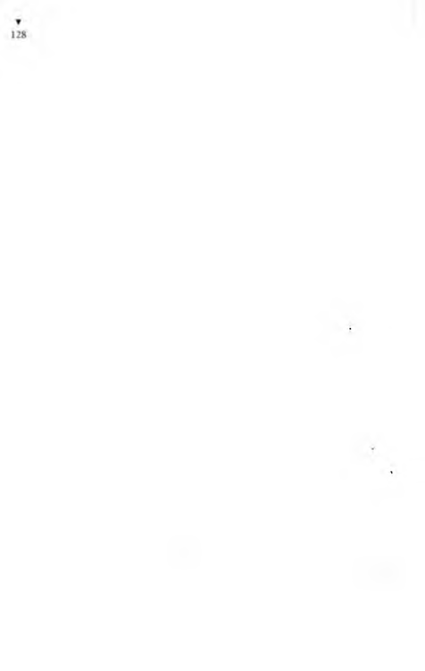

İkinci kata çıkıp epiy arandıktan, odalara girip çıktıktan sonra,
Ayten Hanımın çalıştığı yer diye gösterilen bir büyük odaya
girdim. İçerde üç kadın vardı.
“Ayten Hanımı rica ediyorum efendim,” dedim.
Hiçbiri sesini çıkarmayınca, “Bir iş için arıyorum da...”
dedim.
Kadınlardan biri, “Ne işiymiş o? Söyle, belki bizde yaparız...”
dedi.
“Efendim ben aslında İbrahim Beyi arıyorum, Ayten Hanımın
yanındaymış da...”
Benimle konuşan kadın, “Ayteeen, Ayteeeen!” diye yandaki
açık kapıya doğru seslendi. İçerki odadan da, “Ayten, şefin yanına
gitti...” diye bir kadın sesi duyuldu.
“Beklesem çabuk gelir mi?..” diye sordum.
O hep benimle konuşan kadın, “Çabuk mu gelir, geç mi gelir,
ben ne bileyim; sen git de onu şefe sor!” dedi.
“Peki, şef nerde?” diye sordum.
“Hangi şef?”
“Siz dediniz ya, Ayten Hanım yanına gitti diye, işte o şef...”
Kadın memur, açık kapıya doğru yine seslendi:
“Çocuklaaar, şefin nerde olduğunu bilen var mı?”
Kapısı açık duran yan odadan birisi cevap verdi:
“Şef mi? Az önce tuvalete doğru gidiyordu ama...”
Yine içerki odadan birisi, “Tuvaletten çıkalı hanidir... Muhasebeye indi galiba...”
Karşısında durduğum kadın memur,
“Muhasebedeymiş,” dedi, “sen şefi bul, o bilir Ayten’in nerde
olduğunu...”
“Muhasebe nerde?..”
“E kardeşim, sen de hiçbişey bilmiyormuşsun... İki kat çık,
sonra bir kat in, muhasebe orda işte...”
Odadaki kadınlar gülüştüler.
“Eksik olmayın...” deyip çıktım.
BEN O AY TENİN DİYE DİYE
*
81
Üçüncü kat bir anababa günüydü. İnsanlar o yana bu yana
koşuşuyor, boyuna da birbirlerine -seslenip sorup bağırışıp duruyorlar:
“Tahakkuk şefi kimdir, bilen var mı?”
“Zat işleri nerde kuzum?”
“Ayten Hanııım, Ayten Hamıım...”
“Ayten Hanım nerde, biliyor musunuz?”
“Ayol o nerde olur, bilmeyen mi kaldı?”
“Kaleme bakın bikere...”
“Ayniyat memurunu gördünüz mü kuzum?”
“Rıza Bey mi, Mahmut Beyin odasında.”
“Yahu, vezne nerde, bilen var mı?”
“Veznedar sekreterliğe gitmiş.”
Üstünde dolu çay bardakları olan askısını havada döndüren
çaycı, onca kalabalığı yararak, “Hop dediiik... Çaylarım Filiiiz!”
diye bağıra bağıra, kendine yol açıyor.
“Vezne nerdedir affedersiniz?”
Bir yaşlı kadın da, elinden tutup çekiştirdiği ağlayan bir oğlan
çocuğunu işetecek yer arıyordu: “Hela nerde acaba?”
Memur olduğunu sandığım birisinin önüne geçip, muhasebe
şefini tanıyıp tanımadığını sordum. “Tanımaz olur muyum hiç...
Kırk yıllık arkadaşım. Mazhar Beydir,” dedi, hemen bir.kapıyı
açıp girdi.
Önümde kalabalık olduğu için kakılıp kalmıştım. Önümdeki
iki yaşlı adam gülüşerek konuşuyorlardı:
“Maşallah maşallah... Şu insanlara bakın beyim, şu insanlara...
Bir de resmi dairelerde iş görülmez derler... Bir de işler yürümüyor
derler... Bir de bize tembel derler. Şu kaynaşmaya, şu koşuşmaya
bakın... Zaman kaybetmemek için nasıl da insanlar kendilerini
odadan odaya, kapıdan kapıya atıyorlar... Kalabalık köpür köpür
köpürüyor...”
“Vallahi aşkolsun... Ben bu kadar çok iş yapan daire görmedim.”
Birisi de mübaşir gibi bağırmakta:
“Daktilo Nebahat Hanım, Daktilo Nebahat Hanınım!”
Kalabalık içinde adım adım yürüyorum, burnuma gelen sidik
kokusu keskinleştiğine göre, helaya yaklaşıyorum.
Üstünde “Baylara”, “Bayanlara” yazılı iki hela kapısı önüne
gelmiştim ki, şişman bir kadın, “Ay aman tıkandım...” diyerek
kendini üstüme bıraktı.
“Biraz su, ölüyorum, biraz su...”
Su nerde, hava bulduğumuza bin şükür... Sudan umudunu
kesen şişman kadın, “Şube müdürünü aramaktan dizlerime kara
su indi. Ah bir bulsam şube müdürünü, gerisi çorap söküğü gibi
gelecek...” dedi.
Şişman kadım göğsümden yavaşça kaydırıp duvara dayayarak,
“Siz kimi arıyorsunuz?” dedim.
“Kimi aradığımı biliyor muyum, evladım, hepsini birbirine
karıştırdım. Aklım büsbütün karışmasın diye, kimin kimin yanına
gittiğini defterime yazdım. Şube müdürünü bulup ona Muavin
Beyin sekreterinin nerde olduğunu soracağım. Sekreterden Cemal
Beyi, Cemal Beyden de Haşim Beyi... Haşim Bey, ikinci kısım
şefinin yanına gitmiş... O da ayniyat müdürünün yanındaymış...”
Kadın, defterinden okuyordu. Daha da okuyacaktı ama,
“Ben de Mazhar Beyi arıyorum...” deyip sözünü kestim. Şişman
kadın, “Ay... Aman.,, Off...” diye inliyordu. “Fenalık mı geldi?”
diye sordum. “Böyle yerde insana iyilik gelecek değil ya, elbet
fenalık geldi...” dedi. Galiba kadın bayılmıştı, ben aradan geçip
yürüdüğüm için kadına bakamadım.
Bir yaşlıca adam, “Allah Allah!.. Bu dairede hiçkimse kendi
yerinde durmaz mı canım!.. Bu ne iştir, kim kimin yanında belli
değil. Bunlar iş mi yapıyorlar, yoksa odadan odaya mekik mi
dokuyorlar... Bulabilene aşkolsun... Bir haftadır gelip gidiyorum,
hâlâ aradığım memuru bulamadım...” diye bar bar bağırıyordu.
Birden bana, “Delikanlı, sen kaç zamandır sürünüyorsun buralarda?” diye sordu.
“Ben daha bu sabah geldim,” dedim.
“Vah vaaah!.. Öyleyse sen daha işin başındasın oğlum ,”
dedi.
Sonunda muhasebeyi buldum, içeri girdim. İçerde önce biri
kadın, biri erkek, iki kişi gördüm. Kadın, elinde aynası, boyanıyordu. Erkek de kendi kendine sesli sesli konuşarak önündeki toto kâğıdını dolduruyordu. Bisüre durup onlara bakarken karşımdaki
açılmış gazetenin kımıldadığını görünce, gazetenin arkasında bir
kişi daha olduğunu anladım. Toto dolduran erkekle, boyanan
kadının işleri olduğu için, açılmış gazeteye doğru, “Affedersiniz,
burası muhasebe mi?” diye sordum. Gazete birden aşağı indi,
karşımda kızgınlıkla titreyen bıyıkla, sallanan gözlük gördüm;
gözlüğün altında bıyık, bıyığın altında da ağız... O ağız açılıp
kapandı: “Kapıdaki yazıyı görmedin mi?”
“Gördüm efendim... Ayten Hanım muhasebeye gelmiş de...
Muhasebeden Mazhar Bey de...”
“Mazhar Bey, ya Muavin Beyin yanına çıktı, ya Ragıp Beyin
yanına indi...”
“Acaba hangisine?”
“ikisine de bir bakıver. Oralarda bulamazsan, bir de idare
müdürüne git sor.”
Gazeteyi gene yüzüne kapatıvermişti.
“Affedersiniz, rahatsız ediyorum, idare müdürlüğü nerde?”
Gazetenin arkasından bağırdı:
“Zemin katta danışma var, git oraya sor! Ben rehber miyim
yahu...”
Muhasebeden çıktım. Birisi bana, “Bakım servisi şefliği nerde?”
diye sordu. Ben de ona Mazhar Beyi sordum. Başka birisi bana,
“Mazhar Beyi niçin aramıştınız?” dedi.
“Ayten Hanım, Mazhar Beyin yanına gitmiş de...” dedim.
“Yok canım, olamaz!” dedi, “Ayten Hanım nasıl gidebilir
Mazhar Beyin yanına?”
“Niçin gidemez?” diye sordum.
“Mazhar Bey geçen yıl, sizlere ömür, vefat etti de...”
“Yaaa!”
“Ya!”
“Başınız sağolsun. Öyleyse ben idare müdürüne gideyim...”
“işte, idare müdürünün odası şurası!”
Şans olursa yani bu kadar olur. Kendiliğimden idare müdürünün odasına gelip kapısına dayanmışım. Tam kapıyı tıklatıp içeri girecektim ki, bir adam eliyle beni geri çekip, “Heeey, nereye?”
diye sordu.
“İdare müdürünü göreceğim...” dedim.
“İdare M üdürü Beyi...” diye sözümü düzeltti.
“Evet, İdare Müdürü Beyi...” dedim.
Ama o beni dinlemiyordu. Bir küçük pilli radyoyu kulağına
dayamış, yayınlanan futbol maçını dinliyordu. Aradabir coşkulanıp sıçrıyor, “Hadi!..”, “Yaşa!”, "Sok içeri!” gibi anlamlı sözler ünnüyor, arada da bitakım anlamsız seslerle homurdanıyor,
biyandan da benimle konuşuyordu. Radyodan anlatılan maçın
coşkulu biyerinde konuşursam, elinin birini uzatıp ağzımı kapatıyor, dudaklarını da büzerek sus işareti yapıyordu.
“Demek, Müdür Beyi göreceksin?..”
“Evet...”
“Peki, biz burda neciyiz? Ha? Kimiz biz? Sorsana, danışsana
bikere...”
İdare müdürünün odacısı olduğunu anlamıştım. Anlamazdan
gelip, “Ne sorayım?” dedim.
“Müdür Beyi görebilir miyim, diye sor.”
“Peki. Müdür Beyi görebilir miyim?”
“Hah şöyleee... İşte böyle sorulacak.”
“Sordum işte; Müdür Beyi görebilir miyim?”
“Göremezsin.”
“Neden?”
“Müdür Bey burda yok da ondan...”
Herkesin birbirinin yanma gitmesine alıştığım için, “Kimin
yanına gitti?” diye sordum.
“Maça gitti, maça... Müdür Bey maça gitti.”
Anlayın ağbiler, artık ben nasıl bunalmışım, nasıl şaşırmışım
ki, “Maç kaçıncı katta?” diye sormaz mıyım!
“Ne? Kaçıncı katta mı?”
“Yani... Maç kimin yanına gitti diye soracaktım da...”
“Ne diyorsun yahu... Maç nerde olur, elbet stadyumda...
Müdür Bey, stadyuma gitti...”
“Eyvaaah!” diye bağırdım. Oraları fır fır dönmeye başladı.
Stadyuma koşup idare müdürünü bulmaktan başka umarım
yoktu. Belki öbürleri de onun yanındaydı. Yanında olmasa bile,
nerde olduklarını bilir elbet...
Daireden fırlamamla deliler gibi koşmaya başladım. Dolmuşla
gitsem geç kalacağım. Taksiye bindim. Stadyuma gittiğimde maç
çoktan başlamıştı. İçeri girmem zor olmadı. Stadyum öyle kalabalık ki, hani iğne atsan yere düşmez derler ya, işte öyle.,. Bunca kalabalığın içinde müdürü nasıl bulacağım... Dolana dolana,
iı ile kakıla, vurula dövüle, şeref tribününe dek gidebildim ama
üstüm başım yırtıldı. Çabuk bulmam gerekiyor müdürü, onun
için iki elimi ağzıma boru yapıp, “Müdür Beeey! Müdür Beeey!”
diye bağırmaya başladım. Ne kadar bağırsam boşuna, çünkü maç
seyircileri çok, hepsi de bağırıyor. Ben bir kişiyim, onca insanın
sesini nasıl bastırabilirim? Seyirciler tepinerek, yırtınarak bağırıyorlar; onlarla birlikte ben de, Müdür Bey diye bağırıyorum.
“Ulan ineeeek!”
“Müdür Beeeey!”
“Yuuuu!”
“Goool!”
“Favul ulan favul...”
“Höst, ayı oğlu ayı!”
“Müdür Beeeey!”
“Yuf beeee...”
“Vay inek arabası vaaay...”
“Hakeme gözlüüük...”
“Müdür Beeeey!”
*■
YA Ş A R N E YAŞ AR N E Y A Ş A M A Z
86
Önlerinde durup görmelerine engel oluyorum diye beni itip
kakıyorlar. Efendi görünüşlü birine, “Affedersiniz, M üdür Bey
nerde, gördünüz mü?” diye sordum.
“Çekil önümden ulan, ne müdürü sığırcık!” diye beni itti.
Yanındaki de, “Açıl ulan!” diye beni tekmeledi.
“Ne bağırıp duruyor bu herif, müdür müdür diye yahu! Deli
mi ne!..”
“O da müdür diye tozutmuş...”
Dünyada iyi insanlar da var. Bu iyi yüreklilerden biri, “Sen
Müdiir’ü mü arıyorsun?” diye sordu.
Ben sevinçle, “Evet,” dedim, “Müdür Beyi arıyorum. Bir evrak
var da numarası eksikmiş... M üdür Bey stadyuma gelmiş dediler.
O nu arıyorum.”
“Bak, şurda polis var, polis bilir... Hazır haftaym da olmuşken
git polise sor,” dedi.
“Sağolasın...” deyip polise doğru yürüdüm. O iyiliksever
adamın arkamdan, “Düüüt! Enayiyi nasıl da sepetledim!” diye
benimle alay ettiğini duydum. Önlerinden geçtiğim seyirciler,
“Taş arabası!”, “Hödüüüük!” filan diye söverek nereme gelirse
vuruyorlardı. Doğrusu ya, bu kendini bilmezlerle dövüşmeye
zamanım olmadığından aldırmıyordum.
Polisin yanına varıncaya dek öyle tartaklanmıştım ki, elbisemin
bütün düğmeleri sökülmüş, düşmüş... Pantolonumun belini
elimle tutmasam, pantolon bacaklarımdan kayıp düşecek...
Neyse, polisin yanına varabildim. Çok acele ve çok önemli bir
iş için Müdür Beyle görüşmek istediğimi söyledim. Nasıl bir iş
olduğunu sordu. Evrakımda bir numaranın eksik olduğunu,
buyüzden Müdür Beyi görmek istediğimi söylesem, beni Müdür
Beyin yanına götürmeyecek... “Çok önemli, çok acele...” diye
üsteledim. Galiba, sabotaj ihbarı filan gibi bişey sandı. “Gel
benimle!” deyip, önümde yol açarak beni tribünlerin arkasında
biyere götürdü. Bir odaya soktu. Güzel, dayalı döşeli bir oda...
Masada bir adam, telefonla konuşuyor. Polis ona, “Müdür Bey,
ı,ok önemli bişey için bu adam sizinle konuşmak istediğini
söyledi, getirdim...” dedi.
»
Ben pantolonumun belini tutarak başımla selam verdim.
Müdür Bey, “Nedir?” diye sordu.
Ben de, “Sizi çok aradım M üdür Bey, çok şükür sonunda
buldum...” diye anlatmaya başladım.
“Nedir, kısa anlat!” dedi. Çünkü, telefonun alıcısını elinden
bırakmamıştı.
“Beyfendi, benim bir miras işim vardı... İki yıl uğraştıktan
sonra, şükürler olsun, işi sonuna getirdim.”
Dışarı çıkmak üzere olan polise, “Dur, dur! Ayrılma! Bekle!”
dedi.
Ben sözümü sürdürdüm: “Yalnız evrakta bir numara eksik
kalmış. İşte bu kâğıt!” diye elimdeki tomarı M üdür Beye uzattım.
Müdür, masasında geri geri çekilerek, “Sen ne diyorsun yahu?”
diye bağırdı.
“Bir numara istiyorum...” dedim.
Polise, “Al bunu götür, al bunu götür!” dedi.
Polis kolumdan tutup çekti. M üdür ün polise kaş göz işareti
yaptığını görmüştüm, rengi de kül gibi olmuştu.
“Asıl benim aradığım Ayten Hanım... Ama Ayten Hanım,
Mazhar Beyin yanma gitmiş... Mazhar Bey de geçen yıl, sizlere
ömür, vefat ettiğinden...”
Müdür, iki elini ileri ite ite, polise, “Götürsene yahu, götür-
sene!” deyip duruyordu. Her nedense polis kolumdan tutmuştu
ama, nazik davranıyordu.
Yumuşar gibi olan Müdür, “Sen ne diyorsun yahu, anlamıyorum ki...” dedi.
“Ben de size anlatmaya çalışıyorum...” dedim.
Müdür korku içinde, büyümüş gözleriyle bana bakıyordu.
“Bugün ille de bu numarayı almalıyım; yoksa param düyuna
kalırmış.”
“Sen ne anlatıyorsun yahu?”
“Derdimi... Sonra efendim, o numarayı İbrahim Bey verecekmiş...”
“Bay polis, al götür bunu, al götür!”
Polis çekiştirmeye başlayınca, derdimi çabuk çabuk anlatmaya
çalıştım:
“İbrahim Bey Ayten H anım ın, Ayten Hanım da şefin, şef
de bilmem kimin... bilmem kimin... bilmem kimin... Bilmem
kim de...”
Polis, “Gel dışarı! Çık dışarı be!” diye bağırarak beni dışarı
sürüklüyordu. Biyandan da bana, “Yahu, bu müdür, stadyum
müdürü be!” deyip duruyordu.
“Ayten Hanımı bulsam, bir bulsam onu...”
“Sen laf anlamaz mısın be... Bu müdür başka müdür, stadyum
müdürü...”
Beni zorla odadan çıkardılar. Düdükler ötmeye başladı. Polisler başıma üşüştü. O itiş kakışta, pantolon ayağımdan sıyrılıp düştü. Ben artık iyicene bozulmuşum, “Ayten Hanım!..” deyip
duruyorum.
Polisler gelince, korkudan titremekte olan o müdür birden
yiğitlenip, “Ben o Ayten Hanım ın...” diye sövmeye başlamaz mı!
Ben de coştum artık, “Ben de, ben de... Ayten Hanımın da,
sizin de, hepinizin de, müdürünüzün de, dairenizin de, verdiğiniz
vereceğiniz numaranızın da, topunuzun da...” diye kantarlıyı,
sunturluyu öyle bir savuruyorum ki, koskoca stadyum çın çın
ötüyor. Neden mi ötüyor? Çünkü, müdürün elinde tuttuğu ve
benim telefon sandığım şey, telefon değilmiş, stadyumun hoparlörüne bağlı mikrofonmuş. Ben, “Hay o Ayten Hanımın da...
Hay sizin de... Hay dairenizin de...” diye adlı adınca sövdükçe,
benim sövgüm stadyumda gümbür gümbür gümbürdüyor. Onlar
telaştan mikrofonu kapamayı da unutmuşlar.
Polisler üşüştü başıma, coplar iniyor ki, nasıl insafsız vuruyorlar. Ben copu yedikçe canımın acısından her kime ve her nereye
B E N O A Y T E N I N Dİ YF . Dİ YF.
T
89
sövülmesi gerekirse, hiçbirini eksik bırakmadan hepsini sayıp
dökerek sövüyorum.
Polisler beni sürükleye sürükleye cankurtaran arabasına soktular.
Akıl hastalıkları hastanesine tıktılar. Hekimler iğne yapıp beni
bayıltmışlar. “Ben o Ayten’in de... Hay ben o Ayten’in de...”
diye diye bayılmışım. Ben Ayten diyorum ya, herkes ne demek
istediğimi anlıyor. Tımarhaneye de girdim ağbiler...
Yaşar Yaşamaz’ı dinleyenler, onun başına gelenlere öyle şaşmışlardı ki, hep birden,
- Haydaaaa! deyip kaldılar.
Yaşarın yanındaki delikanlı,
- Yahu, seni tımarhaneye atamazlar ki... Nasıl atarlar be!
dedi.
Yaşar,
- Atamazlar, dedi, atmamaları gerekir... Çünkü ben ölmüşüm.
Ölmüşüm ama, beni deli sandıklarından öldüğüme inanmıyorlar
ki... “Ben Çanakkale’de şehit oldum...” dedikçe, deli sözü sanıp
basıyorlar sopayı, dayıyorlar üstümden aşağı soğuksuyu... “Yahu
etmeyin, ben şehit bir adamım...”
İşte böyle ağbiler, okula gideceğim, ölmüşsün diyorlar. Askere
alacakları zaman yaşıyorsun diyorlar. Mirasımı almak isterim,
ölmüşsün derler. Babamın vergi borcunu alacakları zaman yaşıyorsun derler. Yaşıyorsam nüfuskâğıdımı verin derim, yok, sen yaşamıyorsun derler. Tımarhaneye atacakları zaman yaşıyorsun
derler...
Koğuştakiler, bikez daha,
- Haydaaaa! çektiler.
Karşılama Törenindeki En Büyük Adam
G ardiyanların, akşam olunca hükümlüleri koğuşlara sokmaları
oldukça zor oluyordu. Hele hava iyiyse, hükümlüler başlarının
üstünde tavan olmayan bahçede kendilerini biraz daha özgür
duyduklarından, ellerinden geldiğince koğuşlara geç girmeye
çabalıyorlardı. Oysa ikinci kısmın birinci koğuşundakiler, daha
nöbetçi gardiyan düdüğünü öttürmeye başlamadan çok önce, ak
şamın alacası cezaevi duvarlarına inerken, kümese alışık tavuklar
gibi koğuşlarına doluşuyorlardı. Çünkü bir ayak önce yemeklerini
yiyip Yaşar Yaşamaz’ın başından geçenleri dinleyeceklerdi.
Koğuş arkadaşları, Yaşar Yaşamaz’ın akıl hastalıkları hastanesinden nasıl kurtulup da cezaevine düştüğünü çok merak ediyorlardı.
Birlikte akşam yemeğini yedikleri koğuş arkadaşlarından
biri,
- Hele tellendir bir cıgara Yaşar... diye cıgara paketini onun
önüne uzattı.
Yaşar, cıgarayı alırken,
- Sağol ağbi... dedi.
- Tımarhaneden nasıl kurtuldun be Yaşar?
Bir hükümlü,
- Aman anlat şunu... diye üsteledi.
Yaşar,
- Anlatayım ağbiler... dedi.
Koğuşta bir kaynaşma oldu. Herkes yerini aldı ve Yaşarı
dinlemek için iyice yerleşti.
Yaşar Yaşamaz, iki üç kez öksürdü. Bu öksürme, anlatmaya
başlayacağının, artık gürültü edilmemesinin işaretiydi. Koğuş
sessizliğe gömüldü. Yalnız arasıra çakmak ve çakılan kibrit sesiyle
göğüs geçirmeler duyuluyordu.

Yaşar Yaşamaz cıgarasından derin bir soluk çekip,
- Ben, dedi, yanlış yapmışım. Akıl hastanesine girince hiç
si simi çıkarmamak varmış. Ama keçileri kaçırdığımdan kendimi
nıtamayıp kızgınlıktan ağzım köpürerek, “Hay ben o Ayten
I [anımın anasını avradını, yedi gelmişini geleceğini, geçmişini
geçeceğini... eşiktekini, beşiktekini... Yedi kat soyunu sopunu...”
diye durmadan kalayladıkça beni gerçekten deli sandılar.
Hükümlülerden biri,
- İyi yapmışsın Yaşar, dedi, sövüp sayarak iyice boşalınca, için
serinlemiştir.
Yaşar,
- Ne demek ağbi, dedi, içim değil, dışım da serinledi. Senin
de başından aşağı o soğuk suları boca etseler, sen de bak nasıl
serinlemek değil donardın... Başımdan aşağı hortumla soğuk su
sdııyorlar.
- Neden o?
- Neden olacak, kızmışım ya, beni soğutacaklar...
İkidebir soru sorarak yada söze karışarak, sözün akışının
kesilmesine sinirlenen hükümlülerden biri,
- Yahu, susun da anlatsın kendisi... dedi.
Koğuşun dibindeki ranzadan da biri,
- Lafı piç etmeyin! dedi.
Yaşar anlatmasını sürdürdü:
- Soğuk suyla ıslattıkları yetmezmiş gibi, bana bir de palaskalarıyla giriştiler ki, ıslak bedenime kayışlar vurdukça ben artık dayanamayıp amana geldim ve dilimi tutup pes ettim. Herhalde
beni öldü sanmış olacaklar ki, tedaviye son verdiler. Nice zaman
geçtiğini bilemiyorum, beni soyup hastane giysisini giydirdiler.
Sonra hekimin karşısına çıkardılar. Ben hekimi görünce, derdimi
anlatacak birini buldum diye birden sevinip, “Doktor Bey, beni
deli sandılar, vallahi billahi ben deli değilim,” dedim.
Hekim gülümseyerek,
“Sana kim deli diyormuş, elbet deli değilsin...” dedi.

Odada beyaz gömlekli biri sırıtarak,
“Dünyada hiçbir deli, ben deliyim diyecek kadar deli değildir,”
dedi.
Bunu diyen herifin, hastanenin eski bir hastabakıcısı olduğunu
sonradan öğrendim. Hekim, onun lafa karışmasına kızıp,
“Sen işine bak, enjeksiyonu hazırla!” dedi.
Enjeksiyon dediği de iğne. İğne dedimse, bacının oya iğnesi
belleme, çuvaldızdan kalın ve temel çivisinden uzun bir iğne...
Ben iğneyi görünce korkuya kapılıp belki kurtulurum diyerek,
“Elendim,” dedim, “bikez benim deli olmam olanaksız. Çünkü
ben ölmüşüm. Deliler de ölür ama hiç ölüler delirir mi?”
Ben böyle deyince, benim saçmaladığımı sanan doktor, hastabakıcıya, o iğneyi bırakıp başka bir iğne almasını söyledi. Bu, ilkinden de büyük bir iğne... Öyle büyük bir iğne ki, beni onunla
duvara mıhlayacaklar sandım. Beni, muayene yatağına yüzükoyun
uzattılar. Ayağımdaki hastane pantolonunu sıyırdılar. Gözüm
iğnede. Hekim iğneyi aldı, içine su çekti. Çocukken, söğüt dalından fıskiye yapar da onunla da su fışkırtırdık. İşte hekim de iğnenin suyunu havaya fışkırtıp bir zaman oynadı. Ben, anlatırım
derdimi de elinden kurtulurum diye, bir daha ölü olduğumu
söyledim. “Hem de şehit düşmüşüm...” dedim.
Hekim, iğneden havaya su fışkırtıp oynarken, “Hangi savaşta
şehit düşmüşsün?” diye sordu.
Ben de, “Bir kere değil ki, iki kere şehit düşmüşüm, biri
Çanakkale Savaşı’nda, biri de Dersim’de...” dedim.
“Düşmüşüm diyorsun, haberin olmadan mı şehit düştün?”
diye sordu.
“Evet,” dedim, “benim haberim olmadı hiç... Şehit olduğumu
bana nüfus dairesinden haber verdiler de öğrendim, ikinci kez
şehit düştüğümü de eksik olmasın askerlik şubesinden söylediler.”
Hekim, elinde iğneyle geldi yanıma.
“Demeksen şimdi şehitsin!..” dedi.
Eliyle belkemiğimi aşağı yukarı sıvazlayarak yoklamaya başladı.
“Resmi makamlar şehit olduğumu söylüyor. Ben de onların
yalancısıyım...” dedim.
*
iğnenin ucunu, sırtımda dayandığı yeri duydum.
Hekim,
“Anlat, anlat sen... Boyuna anlat, durma!” dedi.
Ben de anlattım:
“Ölmüş olduğumdan okula almadılar beni. Çünkü nüfuskâ-
ğıdım yok... Hiç ölünün nüfuskâğıdı olur mu? İşte buyüzden
ya, Anşe’yle de evlenemiyoruz.”
İğnenin hart diye belimden içeri girdiğini duydum. Öyle acıdı
ki, sanki iğnenin ucu göbeğimden çıkacak sandım. Ellerimi ayaklarımı yatağa kayışla bağladıklarından kıpırdayamadım. içimin ezilip kendimden geçmekte olduğumun ayırdındaydım. Sonradan
arkadaş olduğumuz o hastabakıcının dediğine göre, bayılırken
“Anşe... Anşe...” diye sayıklayıp inleyip durmuşum.
Hastanede ilk günler deli olmadığımı anlayamadılarsa da,
zaman geçtikçe hekimler deli olmadığımı anladılar. Ben onlara,
“Ben ölmüşüm, iki kez şehit düşmüşüm...” dedikçe onlar deli
olduğumdan saçmaladığımı sanıyorlarmış. Ama zamanla, onlar
da anladılar benim deli olmadığımı. Hekimler beni çok severlerdi.
Sık sık beni çağırıp, “Anlat şu başından geçenleri Yaşar Yaşamaz!”
derlerdi. Ben de anlatırdım. Deli olmadığımı anlayınca beni hastanenin içinde özgür bıraktılar. Özgür bıraktılar dersem, hani yani bağlamıyorlar, koğuşa tıkmıyorlar, delilerin yanına sokmuyorlar.
Hastane içinde iş gördürüyorlar. Daha benim gibi beş on kişi var.
Ne iş verseler canla başla yapıyorum ki, gözlerine gireyim de beni
burdan taburcu etsinler. Hastanenin bahçesinde çalışıyorum. Hekimlerin odalarını silip süpürüyorum. Heryere ben koşuyorum.
Ama böyle giderse baktım beni burdan salacakları yok.
Koğuştakilerden biri dayanamayıp,
- Neden? Deli olmadığını anladılar ya? diye sorunca, öbür
hükümlülerden “Şşşşşt! Susun da kendi anlatsın yahu...” diye
sesler yükseldi.
Yaşar da anlattı;

- Deli olmadığımı anlamaya anladılar... Ama bıraksalar, hastanenin işlerini kim görecek? Kadro eksik, hastanenin görevlileri yetmiyor işlere. Buyüzden, bizim gibi olanları kullanıyorlar.
Hastaneden kaçmak kolay. Arkadaşlardan kaçanlar da var.
- Sen de kaçsana yahu... diye bir ses yükseldi koğuştan.
Arkadan yine “Şşşşşt!” sesleriyle soruyu soran susturuldu.
- Ben kaçmam... Hatta beni tımarhaneye kapadıkları bibakı-
ma da iyi oldu. Çünkü beni nasıl olsa günün birinde burdan
çıkaracaklar. Ölene dek burda tutmazlar ya. Çıkarırken de hastaneden, elime iyileştiğimi bildirir bir taburcu kâğıdı verecekler elbet. İşte ben de bu kâğıdı vermelerini bekliyorum. Tımarhaneden verilmiş olsa bile gene de resmi bir kâğıttır, yaşamakta olduğumu
belgeler belki diye düşünüyorum. İşte buyüzden kaçmıyorum
hastaneden. Hekimlerden biri beni çok severdi. O nun her işine
koşar, her işini yapardım.
Bigün ona gidip,
“Doktor Bey, siz de biliyorsunuz, benim aklımdan hiçbir
zorum yok, hamdolsun...” dedim.
“Evet, biliyorum Yaşar...” dedi.
“Biliyorsanız, neden beni taburcu etmiyorsunuz?” diye sordum.
“Edemem,” dedi, “ben ne yapabilirim?”
“Ncrdeyse bir yıl olacak hurdayım. Beni hastane işlerinde
kullandığınız için taburcu etmiyorsanız, ben hep burda kalıp
boğaz tokluğuna çalışmaya da razıyım. Para pul da istemem...
Yeter ki siz beni hademe olarak alın!”
İşi kurnazlığa getirip para pul da istemeden hademeliğe gireceğim ki, hademe olaraktan bana bir kimlik versinler, ben de kadrodaki her insan gibi resmen yaşamış olayım... Gelgeldim,
doktor dalgayı çakıp, “Seni nasıl kadroya alalım, resmen yaşamıyorsun ki Yaşar...” dedi.
“Boşu boşuna beni burda tutacak mısınız?” diye sordum.
“Sen laf anlamıyorsun ki... Evet, senin akıl hastası olmadığını
ben de biliyorum. Ama seni taburcu edemem. Çünkü nüfuskâ-
gıdın yok. Nasıl burdan çıkarayım seni? Taburcu listesine seni
ne diye yazarız? Hastaneden çıkış defterine kimliğin olmayınca
nasıl işleriz?”
“İyi ama Doktor Bey, nüfuskâğıdım yok diye ölene dek burda
mı kalacağım ben?”
“Kim diyor sana burda kal diye oğlum... Git Yaşar, git!”
Başımdan git diyerek beni kovuyor sandığımdan geri dönüp
giderken,
“Nereye?” diye sordu.
“Git dediniz, gidiyorum...” dedim.
“Öyle değil... Git, yani kaç git burdan... Sen kaçıp gidersen,
hastaneden bir hasta kaçmıştır diye çizelgeden bir hasta düşeriz.
Bunun için nüfuskâğıdın gerekmez. Ama taburcu etmemiz için,
nüfiıskâğıdm gerekir. Taburcu işlemi başka. Şimdi anladın mı
seni neden taburcu edemediğimi?”
“Anladım efendim.”
“İlk fırsatta kaçar kurtulursun. Ama bu söylediğimi sen benden
duymuş olma!”
“Eksik olmayın Doktor Bey...”
Kapıdan çıkıyordum ki arkamdan seslendi:
“Yaşar! Burdan kaçar kaçmaz ilk işin nüfuskâğıdı çıkarmak
olsun.”
“Nasıl çıkarayım Doktor Bey? Vermiyorlar ki...”
“Mahkemeye başvur. Mahkeme sana nüiuskâğıdı vermek
zorunda... Yoksa başın dertten kurtulmaz nüfuskâğıtsız. Mahkemeye başvur kaçınca burdan...”
“Başüstüne Doktor Bey.”
O doktorun iyiliğini hiç unutmayacağım. Bigün odasında
arkadaşlarıyla oturmuş konuşuyor, tartışıyorlardı. Ben de onlara
kahve pişiriyor, su veriyordum; işlerini görürken de konuşmalarım dinliyordum. Normal insanın nasıl insan olduğu üzerinde tartışıyorlardı. Bu dediğim hekimin sözleri aklımdadır hâlâ:
“Normal insan, dengesiz insandır. Çünkü insan, ateş üstünde
duran su dolu bir kazana benzer. Nasıl içindeki su kaynayınca
kazanın kapağı atarsa, makinelerin buhar kazanlarına da artık
buğu dışarı fışkırsın diye supap yapmışlardır. Buğunun artığı
dışarı fışkırır delikten, kazandaki buğu da gerektiği kadar kalır,
yani dengede durur. Yoksa kazan patlar. İnsan da böyle işte...
Kızınca, duygulanınca, üzülünce, acılanınca, insan içinden bişey
boşaltacak ki, patlamasın da dengesi yerine gelsin. Ee nasıl içini
fışkırtacak? Nasıl kazanın supabı varsa, insanın da bir tahtası eksik
olacak ki, burdan dışarıya su koyversin... Buyüzden işte, dengeli
insan bir tahtası eksik insan demektir. O normal denilen tahtası
eksik olamayanlar, günün birinde birden patlayıp bombok olur,
bir daha da onarılmazlar.”
Hemen o gece kaçtım akıl hastanesinden. O hekimin dediği
gibi de yaptım. Akıl hastanesindeyken, eksik olmasınlar ayak
işlerine koştuğumdan hekimler üç beş kuruş bahşiş verirlerdi. O
paraları toplamıştım. İyi bir dilekçeciye gidip derdimi yandım.
Dilekçeci de bana öyle bir ateşli dilekçe yazdı ki, bakanın gözleri,
tutanın elleri, okuyanın da içi yanar. Dilekçeyi mahkemeye verdim. Bana sayı yazılı bir kâğıt verdiler. Bekliyorum duruşmanın günü gelsin diye. Param tükendi. Bir iş bulup çalışamıyorum
nüfuskâğıdım olm adığından. Büyük kentte yaşamak kolay
mı? Neyse, rahmetli babamın çok yakın bir arkadaşı vardır,
gittim o baba dostuna. Böyleyken böyle işler diyerek anlattım
durumumu. Baba dostu bana bikaç zaman geçinmeme yetecek
kadar para verdi. Mahkemeden yaşadığıma karar çıkıp da mirasımı alınca, ben de borcumu baba dostuna ödeyeceğim. Baba dostunun olduğu yerden tiren istasyonuna otobüsle, dolmuşla
gidiliyor, istasyona gidip tirene bineceğim de, ordan da tirenle
kente geleceğim. Ben istasyona gitmek için alanda dolmuş aranırken, baktım orda bir kalabalık toplanmış, şoförler de bağırıp duruyor: “Haydi, karşılamaya bir iki... Karşılamaya bir iki...”
“Karşılamaya bir iki, beklemiyoruz...” “Yok mu yirmibeş papel
kazanmak isteyen?” “Havadan yirmibeş papel...” “İstasyona iki
kişi...” “Hem vatana hizmet et, hem yirmibeş papeli indir cebe...
Haydi istasyona!..”
«
Dolmuşa binen, dolmuşa doluşan gidiyor. Beş kişilik dolmuşa
altı yedi kişi tıkışıyor.
Şoförler, “Para almıyoruz yurttaşlar, yok mu istasyona giden,
bedava...” diye çaylaklar gibi çığrıştığından, nedir, neyin nesidir
diye anlamak istedim. Rahmetli babam, “Aman oğlum, bişeyi bedava dediler mi, aman alma sakın, ordan kaç... Bedeline almaktan çok daha pahalıya gelir!” derdi. Aklıma babamın o sözü geldiyse
de, cepte para az olunca bedavaya koşmayıp da ne yapacağım, ben
de istasyona parasız yolcu götüren o dolmuşlardan birine girdim.
İstasyona geldik. Gerçekten şoför bizden para almadı.
Yanımdakine,
“Bu şoförün kazancı ne ki, bizi bedavadan taşıyor?” diye
sordum.
O adam,
“Hey avanak, hiç bedavadan olur muymuş!.. Bizim yol paramızı, partimiz şoföre ödeyecek,” dedi.
“Demek partimiz ödeyecek?” diye bir daha sordum.
“Evet partimiz...” dedi.
Partimizin hangi parti olduğunu bilmiyorduysam da herhalde
iyi bir parti olacaktı ki, benim gibi yoksulu parasız istasyona
taşırmıştı. “Bu bizim partimiz hangi partidir?” diye sormak da
olmaz. Çünkü, “Bak şu avanağa, daha arabasına bindiği partisinin
adını bile bilmiyor...” derler.
İstasyona doğru yürüdük ki, aman Allah... Anababa günü...
İğne atsan yere düşmez dedikleri yer, işte o yer... Bayraklı adamlar, çocuklar. Ellerinde sopalara geçirilmiş yazılı bezler, kâğıtlar, mukavvalarla bağrışanlar. Kimisi alkış tutuyor, kimisi yaşa diye
bağırıyor. Beni arkamdan ite ite, o kalabalığın ta göbeğine tıktılar, insan batağına saplanıp kaldım. Kurtulmak için çırpınıp bocaladımsa da boşuna... Taa dün öğledenberi yemek yemediğim,
dünkü öğlen yediğim simitle durduğum için karnım iyice aç
ve yorgunluktan da dizlerim tutmaz olduğundan kendimi o
kalabalığın seline bıraktım. Artık ne olacaksam olayım dedim
kendi kendime. O sıkışık kalabalık bir o yana akıyor, bir bu
yana akıyor... Ama benim ne yana, ne yöne gittiğimizi görüp
bildiğim yok... Öyle de sıkışmışım ki, bacaklarımın yerden
kesildiği, aradabir havalanıp yere düştüğüm, havadayken fır fır
dönüp onun bunun sırtında bir o yana, bir bu yana çevrildiğim
oluyor. O sıkışıklıkta, baktım kurtuluş için çırpınmam boşuna,
yanımdakine,
“N ’oluyor böyle kardeşlik, biz nereye gidiyoruz bu gidişle?”
diye sordum.
O da bana,
“Dünyanın gidişini mi soruyorsun?” dedi.
Töbeeee... Yahu, beni iyice sıkıştırmışlar, bir ayağım sürçse de
yere yıkılsam, insanların ayakları altında ezilip ufalanıp parçam
kalmayacak, o bana dünyanın gidişi mi diyor.
“Bana ne dünyanın gidişinden yahu...” dedim.
“Memleketin gidişi iyidir çok şükür, önce büyük Allahın, sonra
partimizin sayesinde...” dedi.
“Memleketin gidişinin iyi olduğunu bilmeyen mi kaldı... Ben,
sana biz bu gidişle nereye gidiyoruz?” diye sordum.
“Karşılama törenine gidiyoruz. Yoksa senin haberin yok mu?”
dedi.
Bikez aralarına katılmışım, haberim yok desem olmaz...
“Hiç haberim olmaz mı canım, var elbette... Yani işte...”
gibilerden lafı ağzımda iyicene çiğneyip geveledim.
Adam,
“Ben görevliyim,” dedi, “sen de görevli misin?”
“Helbet...” dedim.
“Daha bu kalabalık bişey değil, bunun on katı kalabalık olurdu
ama, bizim muhtar, adam başına yirmibeş lira verileceğini gizli
tuttu yoksa... Açıklasaydı, köyde adam kalmaz, ebesi bebesi,
torunu, dedesi karşılama alanına dökülürdü. Ama muhtar, el
.ikından kendi adamlarına haber salıp yalnız onları göndereni.
Ben de gizliden duyup koştum geldim.”
Daha bir geniş alana gelince, o sıkışıklık biraz açıldı, soluk alır
olduk. Davullar zurnalar çalınıyor... Heryer, heryan bayraklarla, renkli kâğıtlarla donanmış. Halay çekenler, horon tepenler, çiftetelli oynayanlar, kaşık havasına uyanlar, göbek atanlar... Bir
cümbüştür gidiyor ki, hiç sormayın. Hani yorgun olmasam,
karnım da tok olsa, hoşuma da gidecek. “Kim geliyor da, kim
karşılanacak burda?” diye de soramıyorum korkumdan...
Yaşar Yaşamaz’ı dinleyen koğuştaki hükümlülerden biri,
- Neden korkuyorsun? diye sordu.
Yaşar Yaşamaz ın yerine başka bir hükümlü cevap verdi:
- Korkmaz mı canım... Kim olsa korkar onun yerinde. Nü-
lııskâğıdı yok adamın... Casus diye yakalayıp assalar n’olacak?
( )iur a...
Yaşar,
- Hay yaşa ağbi, dedi, biri çıkıp da kimsin, nesin, neyin nesisin
diye soracak olsa hapı yuttum demektir. Ben bunlara yabancı
olduğumu çaktırmadan, bu alayın, bu cümbüşün nedenini öğrendim. Büyük partilerden birinin kalesiymiş orası. İşte partinin o kalesine, parti büyüklerinden beş onu birden biraraya gelip
karşı partilere gövde gösterisi yapılacakmış. Partinin büyükleri
tirenle gelecekmiş.
Bir adam yüksekçe biyere çıktı,
“Yurttaşlar, arkadaşlar! Hadi yürüyün, partimizin ilçe merkezine gidelim!” dedi.
“Gidelim...”, “Haydin arkadaşlar!”, “Başkanı dinleyin hayvanlar!”, “Susun ulan...” gibi sesler, ünnemeler, bağırmalar arasında yükselen uğultuyu parti başkanının sesi bastırdı:
“Karşılama töreninin nasıl olacağını anlatacağım. Törende
görev alacaklar arkamdan gelsin...”
Biz o adamın ardına düştük, gidiyoruz. Nasıl olduysa, o
kalabalığın sıkışıklığında konuştuğum köylüyle gene yan yana
düşmüştük. Daha önce konuşulduğumuz olduğundan yakınlık
duyarak, ardına düştüğümüz adamın kim olduğunu sordum.
Partimizin ilçe başkanı olduğunu söyledi. Benim sorularımdan
kuşkulanıp,
“Hcrhal, karşılama törenine sen ilk geliyorsun?” diye sordu.
Ben de,
“Eh... işte... Ne de olsa... ilk sayılır... gibi bişey...” falan diye
sözü dolandırdım.
“Ben çok geldim,” dedi. “Bundan önce bikaç kez de uğurlama
törenlerine gelmiştim. Ama karşılama törenleri daha cümbüşlü
oluyor.”
“Neden?” diye sordum.
“Çünkü,” dedi, “karşılama töreninde insanlar bovuna paralanıp
yırtınıp durduklarından, uğurlama töreninde ne de olsa yorgun
düşüyorlar. Hem uğurlama törenleri, karşılama törenleri gibi
kalabalık da olmuyor.”
“Şimdi bizimkisi hangisi, karşılama mı, uğurlama mı?” diye
sordum.
Karşılama töreni olduğunu söyledikten sonra ekledi:
“Bundan önce, başka bir partinin de karşılama törenine gelmiştik. O zaman da adam başına yirmibeş lira vereceğiz, demişlerdi.
Bütün köy insanı, çoluk çocuk, kocası karısı, yaşlısı genci, ebesi
bebesi, kapı kapamacasına köyden hepimiz gelmiştik. Gelgeldim,
tören bittikten sonra su koyverdiler.”
“Ne gibi yani?” diye sordum.
“Şu gibi ki, paralarımızı vermediler.”
“Aman, sakın gene öyle olmasın!”
“I-ıh... Öyle olamaz. Bu kez bizim muhtar, şart olsun diyerek
karısının üstüne yemin bastı; paralar tırınk ödenecekmiş.”
Bayraklarla, renkli kâğıtlarla donatılmış bir yapının önüne
gelmiştik. Bu yapı önündeki alanda toplaştık. O partici başkan yüksekçe biyere çıktı. Ordan konuştu. Konuştu ama, ne konuşma, ne konuşma! Ben öyle bir konuşmayı bugüne dek
ıl.ıha hiç dinlemedim. Çok etkili konuşuyordu... Benim zaten
yorgunluktan, açlıktan içim ezilmiş,-bir de o etkili konuşmayı
[Ünlerken başladım ağlamaya... Ne anladın da ağladın derseniz,
lıiçbişey anladığım yok. O konuşmadan bugün de aklımda hiç-
hişey olmadığı gibi, dinlerken de bişey anlamamıştım. Neden
mi ağladım? Yahu, ben ağlamak için bahane arıyorum. Başıma
bunca bela geldikten sonra, deli miyim ki güleyim... Adamın
her sözü, şişe mantarı açkısının burgusu gibi beni burup burup
içime işliyor. Siz o partici başkanın konuşmasını dinlemediğinizden, şimdi size ne desem yalan... Ben küçükken, babam beni ı amiye götürürdü. Cami hocasının, namazdan sonra okuduğu
Arapça duayı dinleyenler ağlarlardı. Babam da ağlardı. Babam
ağlayınca kendimi tutamayıp ben de ağlardım. Hocanın Arapça
dediğini anlamadan nasıl ağlıyorsak, bu da öyle işte... Arkadaş,
karşındakine hiçbişey anlatmadan yarım saat konuşmak kolay
hi iş değil. Dene de bak... Ne kadar saçma sapan konuşsan, gene
de bir anlam çıkar. Bu partici başkanın sözlerinden hiçbişey anlaşılmıyor. Adam o kadar yüksek ve yüksekten konuşuyor, hem de çok derin konuşuyor. Hadi ben ağlamaya hazırım da, durup
dururken ağlayamadığımdan ağlamak için bahane arıyorum
diyelim, ya ötekiler?.. Ağlayan bir ben değilim ki... Başkaları
ila ağlıyor. Onlar da benim gibi nüfuskâğıtsız olduklarından
yaşamıyor değiller ya... Öyleyse neden ağlıyorlar? Helbet partici
başkanın, anlayamadığımız derin sözlerinden...
Partici başkan, o etkili konuşmasını kesip, bu kez de senin
benim konuşmamıza benzer, insan gibi konuşmaya başladı.
1 )edi ki:
“Arkadaşlar, şimdi kulağınızı açın, beni iyi dinleyin!”
Kalabalık hep bir ağızdan,
“Sen bizim babamızsın... Yaşaa, çok yaşa!” diye bağırınca,
partici başkan da onlara,
“Siz de çok yaşayın, varolun evlatlarım... Eskiden de yaptığınız
gibi, biliyorsunuz...” dedi.
Kalabalıktan,
“Biliyoruz, biliyoruz, boşuna gırtlağını yorma!” diye bir ses
çıktı.
İlçe başkanı,
“Önce işbölümü yapılacak, görevliler bölük bölük ayrılacak!”
dedi.
Kalabalıktan biri,
“Kurban da kesilecek mi?” diye sordu.
“Helbet... Hem de kaç kurban... Koç da kesilecek, sığır da...”
dedi.
O ses gene,
“Bize de kurban eti verilecek mi?” diye bağırdı.
Başkan gene,
“Helbeeet... Bütün kurban etleri size dağıtılacak!” dedi.
“Ama geçenki karşılama töreninde, biz büyüklerimizi omuzlarımızda taşırken, burda kurban etleri kapışılmış, biz de hava aldık...” dedi.
Partici başkan açıklamak gereğini duydu:
“Etleri sizlere vermeyişimizin başka nedeni var... Sonra söylerim.”
“Şimdi söyle. Açıkla!” diye başka sesler yükselince, partici başkan da, o etlerin dağıtılmasını belediyenin engellediğini, çünkü veterinerin kurban hayvanları hastalıklıdır diye rapor verdiğini
söylemek zorunda kaldı.
“Bu kez her bir iş düzenli olacak. Kurban eti de dağıtılacak.
Şimdi gelelim işbölümüne...” dedi.
Ama rahat bırakmıyorlardı ki, adamcağız da güzel güzel
işbölümünü anlatsın.
Biri daha çıktı,
“Paramızı ne zaman alacağız?” diye sordu.
Partici,
“Paralarınızı tören bittikten sonra vereceğiz,” dedi.
Bu kez kalabalıktan bozguncu sesleri yükseldi:
“Yooo... Biz işte buna gelemeyiz.”
“Ben yokum bu işte arkadaş!”
*
“Biz paramızı peşin isteriz. Para peşin kırmızı meşin...”
“İşe başlamadan önce paramızı almalıyız.”
Partici başkan,
“Susun arkadaşlar, susun rica ederim. Susun da bir dakika beni
dinleyin,” diye çırpınıyorduysa da, kimseye söz dinletemiyordu.
Sonunda, kalabalığın gürültüsünü bastıran bir sesle bağırarak
anlattı: “Bundan önceleri kaçtır denedik bunu; paraları peşin
ödersek, parayı alan karşılamaya gitmeden tüyüyor, parayı alan
kirişi kırıyor, parayı alan arabasını çekiyor, parayı alan savuşup
gidiyor. Partimizin büyükleri de tirenden inince, piç gibi ortada
kalıyorlar. Ne karşılayan var, ne yaşa diye bağıran, ne alkışlayan,
ne de omzuna kaldıran... Ayıp oluyor büyüklerimize karşı...
1 lerşey parayla olmaz arkadaşlar, biraz da memleketi, vatanı,
vatan uğruna şehit yatanı, savaşlarda ölen babanı atam düşün!
İşte buyüzden paraları peşin veremeyiz. îş bitsin, gelin alın paranızı. İşte size söz; paranızı cebinizde bilin. Paranız da bende.
I la bankada, ha bende... Bana güveniniz yok mu?”
Kalabalıktan birinin gür sesi, bütün mızıldanmaları, mırıldanmaları bastırdı:
“Güven işi başka, para dalgası başka... Biz de çok denedik.
Paraları sonradan vereceğiz diyorlar; işleri görüldükten sonra,
lıcpsi toz, ortada kimse yok ki paramızı ondan alalım.”
Kalabalıktan onaylayıcı sesler yükselince partici başkan açıklamak zorunda kaldı:
“O dediğiniz ancak başka partilerde olur, ama bizim partimizde olmaz arkadaşlar!” -Ç o k kızmış, yüzü babahindi ibiği gibi kabarmış ve kızarmıştı- “Arkadaşlar, vaktimiz çokaz kalmıştır.
Nerdeyse tiren gelecek, büyüklerimiz inecek tirenden... D inleyin beni, büyüklerimizi nasıl karşılayacağımızı anlatacağım.
I )avut Bey arkadaşımız, sizleri bölük bölük ayıracak. Bir bölük

alkışçılar... Bunlar hem alkışlayacaklar hem yaşa diye bağıracaklar. Bir bölük yol açıcılar... Başka bir bölük de, büyüklerimiz istasyonda tirenden inip arabalarına binince, arabaları ellerinde havaya kaldıracak... En zorlu gövde gösterisi budur... Göreyim sizi aslanlarım... Daha başka bir bölük karşılayıcı da, arabalarından
inen büyüklerimizi omuzlarına kaldırıp alana dek taşıyacaklar...
Anlaşıldı mı arkadaşlar?”
“Tamam... Tamam başkanım...” diye sesler yükseldi.
“Karışıklık, kargaşalık istemem haa... Şimdi Davut Bey sizi
bölük bölük ayırsın. Ben de her bölüğe gelip ayrı ayrı her birine
yapacağı işi anlatacağım... Heeey Davut Bey kardaşım, bölükleri
seçerken dikkat et aman, sıskaları, zayıfları omuza kaldırmaya
verme sakın; taşıyamıyorlar da sonra rezil oluyoruz. Omuza
kaldırmaya iriyarıları seç ki, omuzlarına aldıklarını düşürüp
etmeden alana dek kuş gibi uçursunlar...”
Partici başkanı dinlerken düşündüm ki, canla başla çalışır da
bu adamların gözüne girersem, bunlar da bana burda bir iş bulur,
hem de sonradan bir nüfuskâğıdı da çıkarırlar... Bunlar partici
olduklarından, ne isteseler yaparlar diye duymaktayım. Ben de
sayelerinde nüfuskâğıdımı aldım mı artık insan gibi yaşarım.
O Davut Bey denilen adam, oradakileri bölük bölük ayırmaya
başladı. Adamın boyuna bosuna bakıp “Sen bu yana geç, sen
şu yana, sen öte yana!” diye seçip ayırıyor. O seçedursun, bir
pazarlıktır başladı. Otomobilleri kaldıracak olanlar,
“Ağır iştir, bu paraya yapmayız. Elli lira isteriz!” diye tutturdular.
Partici başkan,
“Ulan, otomobil kaldırıyoruz deyince, duyan da sizi sirk
cambazı sanır. Şimdiki otomobillerin ağırlığından ne olacak be,
Cames Bond’un valizi o arabalardan ağır çeker. Araba dediğiniz
boyalı ince saç... Hem de, bir arabayı elli kişi birden ellerinizin
ucunda havalandıracaksınız ki, adam başına elli gram bile düşmez...” dedi.
büyükleri omuzlarında taşıyacak olanlar, işlerinin zorluğunu,
büyüklerimizin çok ağır çektiklerini,’ en küçüğünün bile yetmiş
seksen sağ okka geldiğini, bir taşıyıcının büyüklerden birini kaldırdığını ileri sürüp, onlar da elli lira istediler, Bu kez, alkışçılar ayaklandı. “Onların işi, büyükleri omuza kaldırmakla bitiyor, bizse
büyüklerimiz istasyona geldiklerinden tirene binip gidesiye dek
yaşa diye gırtlak patlatıp el çırpacağız. Alkıştan ellerimiz şişiyor,
I çığırmaktan da sesimiz kısılıp bir hafta konuşamaz oluyoruz. Bizim
işimiz en zoru...” dediler. Neyse, ver aşağı, tut yukarı, kırkar liradan
uyuşularak pazarlık kesildi. Ben, göze gireyim diye, hangisi zorsa
0 işe atıldım. Baktım ki, arabaları kaldırmaktan herkes kaytarıyor.
1 ).ıvut Beyin araba kaldırmaya ayırdıkları, öbür bölüklere kaçıyorlar.
I kıvut Bey beni tepeden tırnağa süzüp “Len bu ne sıskalık, sende
can ne kalmamış, geç şu yana!” diyerek beni alkışçılar bölüğüne itti.
Ben hemen karşı gelip, “Efendi, sen benim görünüşüme bakma,
evelallah otomobil değil koca kamyonu kaldırırım tek başıma...”
dediysem de, Davut Bey beni alkışçılar bölüğüne itince, kıç üstü
yere düştüm. Davut Bey arkasını dönünce, ben hemen gözle kaş
arasında kurnazlık edip omuza kaldırımcılar bölüğüne daldım.
( )tomobillerini kaldıramıyorum, hiç olmazsa büyüklerimizin kendilerini omzuma kaldırırım da gözlerine girerim diye düşündüm.
Partici başkan, her bölüğe görevini bir bir anlatıyor. İlkin araba
taşıyıcılarına ne yapacaklarını anlatıp onları istasyona gönderdi.
Arkadan alkışlayıcılara da derslerini verip onları da gönderdi.
Sıra geldi, biz omuza kaldırımcılara.
Partici başkan,
“Gözünüzü kulağınızı açın, beni iyi dinleyin arkadaşlar,” dedi.
“Bundan önceki gövde gösterilerinde maalesef bazı yanlışlıklar,
aksaklıklar oldu. Büyüklerimize karşı son derecelerde mahçup
olduk. Onun için beni iyi dinleyin, sözlerime dikkat edin.”
İçimizden biri,
“Sen hiç meraklanma başkanım... Bu kez olmaz öyle şey, hepsi
benim emrimde...” dedi.
Başkan öğütlerini sürdürdü:
“Büyüklerimizden kimisi sayın eşleriyle birlikte teşrif ediyorlar.
Büyüklerimizin sayın eşlerini, katiyycn omuza kaldırmak yok. Kadınlar omuza alınmayacak. Ayıptır yahu!.. Siz hiç mi medeniyet görmediniz be! Ulan kadının omuza kaldırıldığı nerde görülmüş?
Geçeııki gövde gösterisinde, dangalağın biri, büyüklerimizden
birinin sayın eşinin bacaklarının arasından kafasını sokup da
kadıncağızı havaya kaldırmaz mı! Kadının yüreği ağzına gelmiş,
havada çırpınır durur, bizim dangalak ormanda ceylan avlamış
gibi kadını omzunda hop hop koşturur.”
O deminki adam,
“Öyle edepsizlik olmaz başkanım...” dedi.
“Sonra, yaşlıları öyle birdenbire omuza kaldırmak yok...
Adamları ürkütmeyin. Geçende gene biri, yaşlı bir büyüğümüzün apışı arasına birden dalınca, adam az daha şey oluyordu. Her karşılanacak adam başına, beş omuz kaldırıcı ayrılacak. Öyle
birdenbire apış arasına dalmak yok. Sonra, kimisi de omuzda
taşınmak istemez. Onları rahat bırakın. Zorlaya zorlaya, çekiştire
çekiştire omuza alıp sırta bindirmek yok. Un çuvalı gibi adamları
sallasırt etmek de yok... Nazik nazik, kibar kibar... Her işin bir
usulü var. îlkin, omuza kaldıracağınız büyüğünüze şöyle bir bakacaksınız, gülümsüyorsa, omuza kalkmaktan hoşlanacak gibiyse, bakınca belli olur, işte öylelerini kaldırın. Anlaşıldı mı?”
Hep birden,
“Anlaşıldı...” diyerek bağırdık.
Yanımda duran biri,
“Cahilliğin gözü kör olsun!” dedi. “Okuryazar olaydık, bunları biz de bilirdik kendiliğimizden. Ama neye yarar, okul yüzü görmemişiz ki...”
Partici,
“Arkadaşlar, omuza kaldırırken dikkat edilecek bişey de şudur,”
dedi. “Kısa boylu birinin, uzun boylu bir büyüğümüzü omuza
kaldırması kesinlikle doğru değildir. Çünkü, omuza kaldırılan
ıı/.un boylu bir büyüğümüzün kısa boylu birinin sırtında, balaklarının sallanması ve ayaklarının yerde sürüklenmesi göze sirkin görünüyor. Çok uzun boylu birinin de, ufak tefek bir
büyüğümüzü sırtına alması da doğru değil; o zaman da asmaka-
bağına kelebek konmuş gibi duruyor büyüğümüz. Çok zayıflar,
sırtlarına çok şişmanlan almasınlar. Taşıyamayınca dengeleri
bozulup devriliyorlar, rezillik oluyor. Öyle ya, sana güvenip sırtına
binmiş, sonra adamı yere yuvarlıyorsun, olur mu hiç! Bunlar da
anlaşıldı mı arkadaşlar?”
“Anlaşıldı,” diye bağırdık.
“Dediğim gibi birden bacak arasına dalmak yok... Adamın
11tığı olur, kasıkbağı kopar, huylanır, gıdıklanır... Bunlara hep
dikkat edilecek. Haydi doğru istasyona! Nerdeyse tiren gelecek.
Allah kolaylık versin...”
Omuza kaldırıcılar da yola düzüldük istasyona doğru. Yolda
giderken bizim bölükten biri,
“Kadınları omuza kaldıranlar var ya...” dedi, “Onlar bizim
partiden değil. Sonra omuza aldıktan sonra, sanki taşıyormuş
gibi yapıp büyüklerimizi yere düşürenler; onlar da bizden değil.
Büyüklerimizin arkasından bacak arasına dalıp hop diye kaldırarak büyüklerimizi ürkütenler var ya, onlar da başka partilerden...
I lepsini biliyorum. Gösterimizin ciddi havasını bozmak için,
bizim partidenmiş gibi aramıza sızıyorlar, bunlar bozguncu...”
istasyona geldik. Az sonra da tirenin düdüğü duyuldu. Davullar vurmaya, zurnalar çalmaya başladı. Tiren durdu istasyonda, büyükler indi. Bizim omuza kaldırma bölüğünün başı bize
işmarı çakmasıyla, bizim bölüktekiler büyüklerimizin üzerine
atıldılar. Büyüklerimiz kapanın elinde kalıyor. Böyle kapışmalarda ben hep sona kalırım. Hiç açıkgözlük edemem. Aman şu büyüğümüzü sırtıma alayım, aman öbürünü yakalayayım
derken, bir de baktım bütün büyüklerimiz sırtta, bana sırtıma
alacak biri kalmamış. Doğrusunu söylemem gerekirse, böyle
boşta kalışım, açgözlülüğümden oldu. Çünkü, göze girmek için
büyüklerimizin en ağırını, en kocamanını aranmak için ordan
oraya seğirtirken bana hiçbiri kalmadı. Eyvah, n’işliyeceğim diye
o yana bu yana bakınırken, birden istasyon lokantasının önünde
büyüklerimizden birini görmez miyim; orda durmuş bakınıyor.
Büyüklerimizden olduğunu nerden anladım derseniz, kılığından
belli... Ayakkabıları pırıl pırıl parlıyor bir, giysisi koyu kara ve
pantolonu tığ gibi ütülü, gömleği kaskatı ve apak, bir de kanı
kelebek oturtmuş ak gömleğinin yakasına, üstelik kasım kasım da
kasılıyor. Belli ki büyüklerimizden bir adam, benim iki boyumda
ve üç ağırlığımda var. Siz bendeki şu avanaklığa bakın yahu, bu
adam tirenden inen büyüklerimizden biri olsaydı, hiç yakalayıp
sırta almazlar mıydı, hiç bana bırakırlar mıydı diye düşündüğüm
yok... Kimmiş bu iri adam arkadaşlar, bildiniz mi? Bu adam, istasyon lokantasının şef garsonuymuş. Lokantanın önüne çıkmış da gelen büyüklerimizi seyredermiş uzaktan... Ben ne bilirim onun
garson olduğunu. Tıpkı büyüklerimizin kılığına bürünmüş. Ben
o zamana dek o kılıkta hiç garson görmüş değilim. İnsan öyle
giyindikten sonra garsonluk eder mi hiç... De ki herif vali, de ki
enazından kaymakam kılığında... Neyse, ben, ya Allah bismillah
diyerek, bunun bacaklarının arasından dalmamla, o koca herifi
ensemin üzerinde oturttum. Allah artık acımış da bana öyle bir
kuvvet vermiş ki, ben göze gireceğim umuduyla o koca herifi
ensemin üstünde tüy gibi kaldırdım. Bikaç kişi birden bana
yardıma koştularsa da,
“Açılın ulan alçaklar, ben kendim taşırım... Atalarımız ‘itin
ağzından kemik alınmaz’ buyurmuş,” diyerek bunları kovdum.
Çünkü kovmasam, sırtımdan büyük adamı kapıp kendileri
sırtlayacaklar, ben de açıkta kalacağım. Herifin, büyük adam
olmayıp garson olduğunu bilmiyorum ki... Bilsem, yere savururum. Herifin ağırlığı bişey değil, ensemde adam gibi otursa, ne kadar ağır olsa gene taşıyacağım, lâkin,
“Bırak ulan beni!.. İndir aşağı ulan!” diye bağırarak çırpınıyor.

Particilik deyip de geçmeyin ağbiler, gayetle zor bir zenaat. Bi-
y.ıııdan, boynuzlan yaldızlı, kuyrukları kınalı, boyunları kordelalı
koçlar kurban ediliyor. Biyandan yakaları rozetli, kollarında parri
bezleri olan görevliler koşup koşuşup duruyor. Kimisi sırtına ağır
ı.eken büyüklerden birini almış, dik yokuşa yukarı vurmuş azgın
manda örneği solumakta...
Benim sırtımdaki herif istediği kadar çırpınsın, ben bikez
büyük adamı ele geçirmişim, alana dek götürüp de heykelin
önüne gelmeden sırtımdan indirir miyim hiç... Niyetim, büyük
adamı, Atatürk efendimizin heykelinin ayakları dibine yıkmak.
( ielgelelim rahat durmuyor ki... Durmadığı da neyse de boyuna sövüyor. Hava çok sıcak olduğundan zırıl zırıl terliyorum.
( hıceleri hafif gelen o koca herif, ben yürüdükçe ağırlaştı da
ağırlaştı; ben diyeyim bir ton, sen de on ton... Her adım attıkça
herif ağırlaşıyor. Debelenip duruyor ensemin üstünde... Baktım
olacağı yok,
“Efendi, hiç boşuna ırgalanma, sallanma, bikez sırtıma almı
şını, heykelin dibine götürmeden, seni bırakmam!” dedim.
“Ulan, ben garsonum!” diye bağırdı.
“Aman beyim, estağfurullah... O nasıl söz! Bizi büsbütün dünya görmemiş belleme, biz hiç mi garson görmedik...” dedim.
O gene,
“Garsonum ulan, garson!..” diye yırtınıyor.
“Ne haddine öyle senin gibi giyinen garson beyim...” dedim.
Pençemden kurtulamayacağını anlayınca yalvarmaya başladı.
1 lem yalvarıyor, hem de biyandan sövüyor:
“Servisim var kardeşim. Sevdiklerinin başı için bırak beni yahu... Ziyafet var ulan, orda olmazsam kovarlar diyorum sana...
Bırak ulan namussuz!”
Bu kez ağzını da bozmaya başladı:
“Eşşoğlueşek, ben senin bildiğin piyazcı çırağı garsonlardan
değilim, gar lokantasının şef garsonuyum...”
“Estağfurullah... Siz beni sınıyorsunuz beyim.”
Bu kez çok daha ağır sövünce, erkekliğime yediremedim,
benim de tepem attı,
“Bak, garson olduğuna beni inandıramazsın ya... Garson da
olsan, seni bırakmam, heykelin dibine dek seni taşıyacağım ki,
partiden taşıma parası alayım...” dedim.
O koca herif baktı ki, elimden kurtuluşu yok, artık debelenmeyi, çırpınmayı bırakıp sırtıma yangeldi. Neden mi sırtımdan atlamıyor? Atlayamaz da ondan... Herif öyle şiş göbek ve hantal
ki, öyle atlayacak zıplayacak gibi değil, ensemden aşağı düşse,
biyerleri kırılacak, ondan korkuyor.
Koca herifi sırtımdan indirmedim ya, pişman da oldum;
çünkü ağırlığı bastıkça bastı, ağırlaştıkça ağırlaştı. Üstelik dün
öğleyin yediğim bitek simitle durduğumdan açlıktan bacaklarım
titriyor. Yahu, şunu sırtımdan alacak bir Müslüman evladı yok
mu diye sağıma soluma bakınıyorsam da, hepsi koşup geçmişler,
ben en geride kalmışım, Ahlaya puhlaya bunu alana getirdim,
tam heykelin dibine vardım ki, orda ayağım mı sürçtü, yoksa biri
çelme mi taktı arkadan, yoksa açlıktan gücüm mü tükendi her
nasıl olduysa oldu, bilemedim, boylu boyunca yere kapaklandım.
Üstümdeki ağırlıkla birlikte Atatürk efendimizin önünde secdeye
varmış gibi yıkıldım kaldım.
Yaşar Yaşamaz susmuştu. Koğuştakiler bisüre onun konuşmasını beklediler.
Yaşardan ses çıkmayınca, biri,
- Paradan ne haber, parayı aldın mı? diye sordu.
Yaşar,
- Kimden ne parası alacaksın arkadaş, dedi, herkes biyana
savuşmuş gitmiş. Parti kapısı duvar. Neyse, ben arkasını bırakmadım, o partici başkanı buldum.
“Seni arayıp duruyorum,” dedim. “Paramı almaya geldim,”
dedim.
Davut Bey denilen dürzü yanındaydı.
“Sen tek başına taşımadın ki, iki kişi birlikte taşıdınız...”
demesin mi!
“Ne iki kişisi... Bir başıma taşıdım koca büyüğümüzü... Yalnız, sırtıma alırken, büyüğümüzün arkasından biri kucaklayıp sınıma binmesine yardımcı oldu. Ona tek başına taşımadın mı
«iıiıır...
O zaman o Davut Bey alçağı,
“Haa, anladım... Alanın ortasına gelince sırtından yere fırlatıp
n.m işte bu!” dedi.
“Töbe atmadım başkanım,” dedim, “vallaha üstümdeki kendiliğinden atladı. Namussuzun biri dc arkamdan çelme takınca Ih n de düştüm.”
Bu kez o partici,
“Nerden belli senin taşıdığın? Her taşıdım diyene para mı
dağıtacağız?” demez mi!
Neyse ki, ordan başka biri beni tanıyıp gülmeye başladı. Herif
fıkır kıkır güler.
Partici başkanla o Davut Bey,
“Ne gülüyorsun yahu?” diye sordukça adam büsbütün gülüyor.
Vmunda güle güle,
“Kvet, bu sırtında taşıdı, ben de tanığım... Ama gar lokantasının şef garsonunu zorla sırtına alıp taşıdı,” dedi.
Bunun üzerine hepsi kahkahayı basıp, yanlış adam taşıdım
diye beni kovdular. Azkaldı ki, bir de sopa çekeceklerdi.
Koğuştakiler hep birden,
- Haydaaaa! çektiler.
Bir hükümlü,
- Demek parayı alamadın? dedi.
Yaşar,
- Sen parayı bırak, dedi, dönüş için tiren bileti bile alamadım.
İstasyona döndüm, bilet alacağım sözde... Para çıkarmak için
elimi cebime attım ki, eyvah!
- Ne olmuş?
- Ne olacak, olan olmuş... Ben o ağır herifi sırtımda taşıyıp da
hikaç kuruş para kazanırım, göze girerim de belki nüfuskâğıdımı
da çıkarırlar diye, kana tere bulanırken, cebimden cüzdanımı
aşırmışlar. Yalnız benim değil, yankesiciler dalmış kalabalığın
içine, arabaları kaldıranların, büyükleri taşıyanların ceplerini
hep boşaltmışlar. Cüzdanımı cebimde bulamayınca, ben ordan
bağıra çağıra karakola koşup,
“Beni soydular!” dedim.
Polis, beni oranın yabancısı görüp,
“İyi öyleyse, tutanak yazalım. Ver kimliğini bakalım... Kimsin,
nesin, nerden gelip nereye gidersin?” diye sorunca ben işte o
zaman yandım.
Koğuştakiler bir daha, hep bir ağızdan,
- Haydaaa! çektiler.
Davacı Tarafın Gerekli Belgeleri İbrazına
G ardiy an Yarımporsiyon bağıra bağıra, bağıramadığı zaman da
düdüğünü öttürerek koridordan birinci koğuşa geliyordu:
- Heeey! Susun! Ziyaretçi listesi okunacak, dinleyin. Adı okunan ziyarete gitsin. Öbürleri içeri, içeriiii!.. İçeri dedim, içerii!
Her ziyaret günü sabahı saat onda, ziyaretçileri gelenlerin adları
okunurdu. Ziyaret günleri hükümlülerle tutuklular koğuşlarına
kapatılmazdı ama, geçen haftaki ziyaret gününde, hem de
ziyaretçisiyle görüşürken bir hükümlü, baskın verilerek şişlene
şişlene öldürüldüğü için, bir önlem olmak üzere bu ziyaret günü
hükümlü ve tutuklular koğuşlarına kapatılmıştı.
Ziyaret süresi onbeş dakikaydı ama, ziyaretçilerin ziyaret yerine
alınmaları, ziyaretçisi gelenlerin çağrılmaları uzun sürdüğünden,
her saatte bir, ziyaretçisi gelenlerin listesi okunuyordu. Listeyi,
torpilli olduğu için cezaevi yönetiminde çalışan gür sesli bir genç
hükümlü, bahçeye açılan kapı ağzında okuyordu.
Yarımporsiyon düdüğünü öttürerek, düdüğünü öttürmediği
zaman da boş durmayıp herkesi koğuşlarına tıkmaya çalışırken,
ziyaretçileri gelenlerin adlarını okuyan delikanlının sesi, bütün
koğuşlardan duyulacak biçimde çın çın yankılanıyordu:
- Listecce! Ziyaretçiler, ziyaretçiler, ziyarctçileeer! Listeee!
Tahtakaleli Kemal, Artist Muzaffer, İdamlık Ali, Yolsuz Niyazi,
Çulsuz Razi, Dümbük Recep, Dümbük ReceeeepL Köfte Mustafa, Duman Haydar, Subay Necati, Pestil Rızaaa! Ulan Pestil Rızaaa... Artist Muzaffer!
Birinci koğuştaki hükümlülerden biri, kendi kendine yüksek
sesle söylendi:
- Bizi arayan soran yok! Yirmiye yoğurt!..
Sonra, yatağına oturmuş, sazıyla uğraşmakta olan Yaşar’a
seslendi:
- Yaşar!
- Buyur ağbi.
- Senin de mi ziyaretçin yok?
- Ben ölmüşüm ağbi... Kimseyi beklediğim yok ki gelsin.
Başka bir hükümlü, Yaşar a o soruyu sorana,
- Yani, dedi, senin bir beklediğin mi var da böyle dedin
şimdi?
Öbürü,
- Yoo, dedi, kimseyi beklediğim filan yok. Ama kaya kovu
ğundan da çıkmadık; mapusluğumuzun ilk günlerinde biriki
gelenimiz gidenimiz olurdu ya, yıllar geçtikçe hepsinin ayağı
kesildi.
- Öyleyse daha ne bekliyorsun?
- Hani yani, mesela dedik... Yirmiye yoğurt, yirmiye yoğurt!
O nların dilinde “Yirmiye yoğurt!” diye bağırmak yoğurt
ucuzladı ama müşteri yok demek, ne gelen ne giden, ne arayıp
ne soran, ne para ne de pul, ne istek ne umut var demekti.
Ziyaretçileri olmayan, ziyaretçileri geleceği umudu da olmayanlar için bu ziyaret günü büsbütün acılı geçiyordu. Yaşar saz çalıp kendi yaktığı türküleri çığırdığından, koğuştaki arkadaşları
da onun türkülerini dinleye dinleye ezberlemişler, arasıra söylemeye başlamışlardı. “Yirmiye yoğurt!” diye of çeken hükümlü Yaşarın türküsünü söylemeye başladı:
Bir kara talih kovaladı beni
Umutlar verdi oyaladı beni
Onulmaz yerimden yaraladı beni
Sarsın yaramı çağırın annemi!
Yaşarın “Anşe’mi” dediği yerde o “annemi” diyerek türküyü
kendine uyduruyordu.
Yaşar, yatağından sazının tellerini dımbırdatıyordu. Çiftekâğıtlı
cıgarasına yumulan hükümlü,
- Çök sazına aslanım, koyver sazı söylesin Yaşarım! diye
bağırdı.
»
Yaşar, yavaştan başlayıp bir türkü tutturdu:
Bir döksem derdimi denizler taşar
Anlatsam yargıca, yargıç da şaşar
Hakkımı istesem ölmüşsün derler
Vergiye salgıya bu ölü yaşar
isterse bulunur kitapta yeri
Hazret-i Isa’yı gösterir diri
Bu sözü söyleyen sorulsa dersin
Yaşarken yaşamaz garibin biri
Akşam olunca, Yarımporsiyon’un düdük sesleri ve “İçeri,
içerii!” diye bağırmalarıyla hükümlülerle tutuklular koğuşlarına
tıkıldılar. Ziyaret günlerinin akşamları, ziyaretçisi gelenlere de,
gelmeyenlere de bir anlatılmaz acılı üzünç çöküyordu. Sevinçli
zamanlarında da, üzünçlü zamanlarında da, haydi gelsin Yaşar,
deniliyor, Yaşar da koğuşun en uygun yerine oturup, yaşarken
yaşamazlığının öyküsünü anlatıyordu.
Akşam yoklamasından ve yemekler yenildikten sonra, yine
birinci koğuştakiler, Yaşar’ı en iyi dinleyecek biçimde yerlerini
almışlardı. Yaşar durup dururken başından geçenleri anlatmazdı.
Nasıl boksçular maçtan önce kızışmak için atlar zıplarsa, nasıl
ayak topçuları maç başlamadan alana çıkıp koşup sıçrarlarsa,
Yaşarı da işte öyle, anlatmaya başlamadan önce konu üstüne söz
açıp kızıştırmak gerekirdi. Bunu bilen koğuş arkadaşlarından biri,
- Eee, Yaşar, miras işi ne oldu? diye sordu.
Yaşar,
- Mirası alabilmem için, önce yaşadığımı ispat etmem gerekiyor... dedi.
- Yahu, mahkemede dava açtın ya...

- Açtım açmasına da...
- Eee?
- Ağbicim, sen Yaşar kardeşinin laflarım kulak arkası ediyorsun. Anlatmıştım ya, biz particilik oynarken ve büyüklerimizi alkışlamak için ve büyüklerimizin arabalarını havaya kaldırmak
için ve büyüklerimizi başımızın üstünde taşımak için, ellerimizi
yukarı kaldırdığımızdan, Türkiye’mizin bütün yankesicileri oraya
dolup, bizim ellerimizin havaya kalkmış olmasını fırsat bilerekten, bizim ceplerimizi tümden boşaltmışlar. Bizi sövüşlemişltı ki ağbicim, ne diyorum sana, o kadar olur işte...
Miting denilen toplantıların ünlü sövüşçülerinden ikisi birinci
koğuştaydı. Birinci koğuşun öteki dallarda uzman yankesicileri
ve hırsızları,
- Ulan yoksa Yaşar kardeşimizi sövüşleyen siz miydiniz? diye
dalga geçtiler.
Yaşar, anlatmasını sürdürdü:
- Cüzdanı alıp gitmişler. Alırlar ağbicim. Çünkü ben göze
girmek için, büyük adam sanarak o manda gibi herifi taşımak
çabasına düştüğümden ve o durumda dünyayı gözüm görmedi
ğinden, cüzdanı değil, ciğerimi, dalağımı söküp de alıp gitseler
ruhum duymayacak; kendimi öylesine vermişim parti yoluna...
Baba dostunun verdiği paralar gitti haydi neyse; mahkemeden
verdikleri o tarih ve sayı yazılı kâğıt vardı ya, o da gitti gider...
Cüzdanımın içindeydi çünkü... Ben gene gittim o baba dostuna...
“Durumlar böyleyken böyle oldu emmi, verdiğin paramı da,
mahkemenin kâğıdını da çaldılar,” dedim.
Baba dostu,
“Kaygılanma Yaşar oğlum, baban öldüyse ben varım... Sana
bir avukat tutayım da, senin şu miras davanı sonuçlandıralım.
Suçluyu ipten çeker alır bir avukat var tanıdığım, haydi ona
gidelim,” dedi.
Gittik o avukata. Olanı biteni hem ben anlattım, hem de
benim eksik bıraktıklarımı baba dostu anlattı.
Avukat,
“Böyle saçma şey olur mu hiç..: Biz bu davayı sökeriz Allahın
izniyle...” deyip Asliye Hukuk Mahkemesi’nde miras davasını
açtı. Duruşmalar başladı. Bir duruşmaya gidiyorum, iki ay sonra
öteki duruşma... ikinci duruşmaya gidiyorum, dört ay sonraya
üçüncü duruşma... Her duruşmaya Anşe’yle babası da geliyor,
bizim baba dostu da geliyor, gelmelerinin nedeni belli. Çünkü,
mirası alırsam, babası Anşe’yi bana verecek. Baba dostu da, nice
iyi yürekli ve baba dostu da olsa, bana adam epiy borç vermiş,
alacağını aldıktan başka, sermayesi benden ortak iş kuracağız.
Anşe mahkeme salonunda oturup gözümün içine bakmakta,
beni yüreklendirmekte:
“Alacaksın mirasını Yaşar ım, hiç meraklanma!”
Ben çoktan mirastan geçtim, nüfuskâğıdımı alsam yeter.
Babamdan kalma biriki parça tarlam var. Tarlaları satıp savıp
evleneceğim Anşe’yle ve bir iş tutup geçineceğiz. Derdim bu...
I'.vet, mahkeme iyiye doğru gidiyor. Yargıç nerdeyse yaşadığıma
inanacak ve yaşadığıma ve de babamın oğlu olduğuma karar
verdi verecekken... Yahu o avukat da nerden çıktı? Bir avukat
geldi duruşmalardan birine,
“Ben hazine avukatıyım!” diyerek yargıcın karşısına dikildi.
Olacak iş mi şu? Bak şu belaya şimdi... Neymiş efendim; ben
kayıtlarda ölü göründüğümden babamdan kalan tarlaları alamazmışım, o tarlalar devletin hâzinesine kalırmış.
Koğuştakiler hep birden,
- Haydaaaa! çektiler.
Yaşar, o zamana dek başından geçenleri oturduğu yerden
anlatırdı. Ama bu kez tiyatroda oynar gibi anlatmaya başladı.
Bir kibrit kutusu aldı, kibritlerini boşalttı. Bu kutunun dışına
bir ince lastik geçirdi ve lastiği gererek, arasına bir kibrit çöpü
soktu. Parmağıyla kibrit çöpüne vurdukça kutuya çarpan çöp,
sanki yazı yazılan daktilo makinesiymiş gibi, “tık tık, tiki tık... tiki
tiki tık...” diye sesler çıkarıyordu. Yaşar, avukatların ve yargıcın
▼
Y AŞ AR NE YAŞ AR NE Y A Ş A MA Z
118
sözlerini, mahkeme kâtibi tutanağa geçirirmiş gibi sözde daktiloda
yazıyordu. Hem mahkeme kâtipliği yapıyor, hem avukatlık yapıyordu. Bir bu yana geçip kendi avukatı gibi konuşuyor, bir karşı yana geçip hazine avukatı gibi konuşuyordu. Yaşar, bu taklitleri
çıkarırken, koğuştakiler de gözlerinden yaş gelesiye gülmekte,
kahkahadan kırılmaktaydılar.
Yaşar, hazine avukatı gibi, onun sesiyle konuşuyordu:
“Sayın yargıcım, merhum Reşidin oğlu olduğunu iddia eden
ve merhumun tek mirasçısı olarak huzurunuza çıkan bu şahsın,
herşeyden önce yaşamakta olduğu bile resmen ve hukuken sabit
değildir. Hukuken hayatta bulunmayan bir kimsenin ise, mi-
rasçılık iddiası abestir. Çünkiii, adının Yaşar olduğunu söyleyen
ve yaşamakta olduğu yalnız kendi iddiası bulunan bu şahsın
- k i hukuken mevcut dahi değildir- Yaşar olduğu da, merhum
Reşit’in oğlu ve tek mirasçısı bulunduğu iddiası da mesnetsiz ve
kanun huzurunda geçerli değildir. Çünkiii... yarın başka şahıs ve
şahıslar da ortaya çıkarak, kendilerinin merhum Reşit’in çocukları
oldukları iddiası ile miras talebinde bulunabilirler. Kendisinin
Yaşar ve merhum Reşit’in oğlu olduğunu iddia eden bu şahsın
gerçekten Yaşar ve gerçekten yaşamakta olduğunu resmen ve
hukuken ispat etmedikçe merhum Reşit’in mirasçısı olamayacağı
meydandadır. Binaenaleyh kanunun madde-i mahsusuna tevfikan, merhum Reşit’in hayatta hiçbir mirasçısı bulunmadığından, merhumun menkul ve gayrimenkul bilcümle nükut ve emvalinin
devlet hâzinesine intikali gerekir.”
Yaşar, hazine avukatının sözlerini belleğinde kaldığı biçimde
söylerken, biyandan da önündeki kibrit kutusundan yaptığı daktilo makinesinde söylediklerini yazar gibi sesler çıkarıyor, böylece koğuşun ortasını bir mahkeme salonu havasına sokuyordu.
Yaşar,
— Hazine avukatı denilen adamın söylediklerini duyunca ben
bittim. Öyle de büyük korkuya kapıldım hiç anlatamam... Korkmamın nedeni şu ki, ister misin bu avukat şimdi beni, “Merhum
Reşit’in mirasına konmak için kendisini sahte olarak Reşit’in oğlu
olarak göstermektedir,” deyip bir de beni hapse tıktırsın... Bin
kez pişman oldum davayı açtığıma ama iş işten geçti artık... Yan
gözle benim Anşe’ye baktım, o da bana bakmakta. Anşe’m, hazine
avukatının sözlerinden öyle üziinçlü ki, ağladı ağlayacak...
Yargıç,
“Söz, Yaşar Yaşamaz müdafiinin...” dedikten sonra, ayağa
kalkan benim avukatıma,
“Hazine avukatının iddiasına karşı siz ne diyorsunuz?” dedi.
Koca bir devletin hâzinesinin avukatı, ona karşı ne denilebilir
ki... Benim avukat, bir öksürüp gırtlak temizledi, cüppesinin
bir kulaçlık kol yenini havada savurduktan sonra başladı konuşmaya:
“Efendim, hayatta olduğunu ve yaşamakta bulunduğunu şu
anda hepimizin ve bizzat sayın hazine avukatının da görmekte
olduğu vc şu anda sağ ve salim olarak huzurunuzda bulunan
müvekkilim, resmi kayıtlardaki herhangibir hatadan dolayı, nasıl
olur da ölmüş diye iddia edilebilir.”
Oh aman çok şükür, avukatımın sözleri üzerine nüfuskâğıdımı
alacağım ve hakkım olan baba mirasına konacağım diye sevinirken, ordan hazine avukatı fırlayıp başlamaz mı:
“Fakat o takdirde, sayın yargıcım, bütün ölülerin yaşamakta
oldukları iddia edilebilir ki...”
Eyvah, ben gene yandım, derken benim avukat, yerinden
fırlayıp hazine avukatı denilen adamın lalını ağzına tıktı:
“Müsaade buyurunuz... Sayın hazine avukatının ölmüş olduğunu ileri sürdüğü müvekkilim, babasının tek mirasçısı olarak, onun bütün özel ve tüzel kişilere olan borçlarını ve devlete vergilerini
ödemiş bulunmaktadır ki, kendisinden merhum babası Reşit’in
vergi borçları tahsil edilirken ölü olduğu ileri sürülmemiş ve
müvekkilim Yaşar’a yaşayan her vatandaşa yapılan işlem yapılmıştı. Bir ölünün, hem de merhum babasının vergisini ödediği görülmüş müdür?”
Hay yaşa sen!.. Benim avukatı gördünüz mü? Mahkemede
olmasak, sarılıp öpeceğim avukatımı. Aldığı para helal olsun...
Hele şu mirasımı bir alayım, sana hakkından çok para vermezsem
bana da Yaşar demesinler... Besbelli işte, biz davayı kazanacağız.
Kazanacağız ya, hazine avukatı sussa... Susmuyor ki... O da fırlayıp ve cüppesinin sağ kol yenini fır fır havalandırıp girişti söze:
“Sayın yargıcım, taraf avukatı şu noktayı unutuyorlar ki,
mahkeme huzurunda ancak resmi belgeler geçerlidir. Biz Yaşar
adlı bu şahsın, Çanakkale Savaşı sırasında şehit olduğuna dair
mahallin nüfus müdürlüğünden aldığımız resmi belgeyi yüksek
mahkemenize ibraz etmiş bulunuyoruz.”
Eyvah ki eyvah... Hazine avukatı benim öldüğümü belgelerle
ispat ediyor. Benim avukatım da çok yaman, gene cüppe kolunun
geniş yenini savurta savurta başladı konuşmaya:
“Bizim de bu konuda tanıklarımız var sayın yargıcım. Evet,
tanıklarımız var. Yaşar’ın merhum Reşit'in oğlu ve tek mirasçısı
bulunduğuna dair hem belgelerimizi takdim edeceğiz, hem de
tanıklarımızı göstereceğiz.”
Bunun üzerine benim avukatımla hâzinenin avukatı, biri,
“Belgeler geçerlidir,” öbürü, “Yok efendim, tanıklar geçerlidir,”
diyerek tartışmaya giriştiler. Tartışma büyüdü, kavgacı horozlar
gibi birbirlerinin üzerlerine atılıyorlar. Nerdeyse vuruşacaklar...
Neyse ki, yargıç tetik davranıp,
“Karar...” dedi de, avukatların kavgasını önledi. Yargıç karar
deyince, hepimiz ayağa kalktık. Yargıç kararını söyledi:
“Karar: Davacı tarafın gerekli belgeleri mahkememize ibrazına,
nüfus müdürlüğünden merhum Reşit’in kayıt suretinin celbine ve
askerlik şubesinden merhum Reşit oğlu Yaşar’ın terhis kaydının
getirtilmesine ve duruşmanın 9 Şubat Cuma günü saat dokuza
talikine karar verildi.”
Yaşar, anlatırken bu kez yargıç rolünü almış, yargıç gibi
kararı okuyor, biyandan da kibrit kutusunda daktilo makinesi
sesi çıkartarak, mahkeme kâtibi görevi yapıyordu. Kararı yazıp
bitirince sustu. Bisüre sürdü bu suskunluk.
Dinleyenlerden biri bu suskunluğu bozdu:
— Sonra?
•
Yaşar,
- Sonra, dedi, bu iki avukat hani mahkemede birbirlerine
horozlanıyorlardı ya... Az daha vuruşacaklar diye yüreğim ağzıma
gelmişti ya... Ben boşuna korkmuşum. Mahkeme salonundan
koridora çıkınca birbirlerinin koluna girdiler. Benim avukat,
hazine avukatına cıgara tuttu. Cıgara alan hazine avukatı da,
çakmağını çakıp benim avukatın ağarasım yaktı. Güle söyleşe
gittiler. Baba dostuna,
“Emmi, bu ne tiyatrodur yahu... Bunlar az önce kanlarına susamışlar gibi birbirlerinin üstüne sıçramıyorlar mıydı?” dedim.
Baba dostu nc de olsa gün görmüş adam,
“Aman oğlum Yaşar,” dedi, “mahkemelerde birbirlerine her
horozlanan avukat birbiriyle küsüşseydi, selamlaşacak iki avukat
kalmazdı ortada.”
“Öyleydi de emmi, hiç mi değil, birbirlerine selam verecek yüz
bırakaydılar. Neydi o birbirlerine saldırmaları?” diye sordum.
“O da görevleridir,” dedi. “Hazine avukatı, hâzineden aylıklı,
bizim avukat da parasım alıyor. Aldıkları parayı hak etmek için
mahkemede ellerinden geleni yapıyorlar ki, avukatı tutanlar da
onlara bakıp bakıp, helal olsun desinler...”
Gerçekten de ben kaç kez içimden bizim avukata, “Aldığı para
helal olsun, az bile aldı...” demiştim.
Sabırsızlanan dinleyicilerden biri Yaşar’a,
- Sonra ne oldu Yaşar, mirası aldın mı? diye sordu.
Yaşar anlattı:
— Sonra ağbicim, gittim benim avukata... Ona korkumu
anlattım. Hazine avukatının çok zorlu olduğunu, babamın
mirasına konmak için sahtecilik edip babamın oğluyum diye
ortaya çıktığımı söyleyerek beni hapse attırabileceğini, davadan
vazgeçmek istediğimi söyledim. Benim avukat gülümseyerek,
“Öyle yapsa gene iyi...” dedi. “İster misin, ölmüş bir adam,
mirasa konmak için kendini diri gösteriyor diye seni sahtecilikle
suçlasın!..” Olur olur... Şimdiye dek olanlar, bundan daha da
olmaz değildi ya...
- Yahu, adamı patlatırsın Yaşar, nüfuskâğıdmı çıkarabildin
mi, mirasım alabildin mi? diye bağırdı koğuştan birisi.
Yaşar,
- Hava aldım, hava... dedi.
- Nasıl olur be Yaşar?
- Oldu işte... Mahkeme üç yıl sürdü. Belge getir, tanık getir...
Belge getir, tanık getir... Üç yıl geçti... Dayanabilsem daha da
dayanacaktım ama, Anşe’nin babası artık dayanamadı. Bir duruşmadan sonra, koridorda beni tuttu kolumdan,
“Yaşar oğlum,” dedi, “nüfuskâğıdmı çıkaracaksın diye Anşe
seni çok bekledi. Senin yüzünden çok kısmetini tepti. Gül
gibi kızıma da yazık ettin. Görüyorsun işte, sana nüfuskâğıdı
verecekleri yok.”
Kafam attı,
“Ama emmi,” dedim, “sen de biliyorsun ki ben ölmüş değilim,
yaşıyorum.”
“Oğlum, ben bilmişim kaç para eder, devlet bilmeyince...
Onun için, en iyisi, sen gel bu benim Anşe’den vazgeç. Hiçbir
zaman ölüye nikâh düşmez.”
Nasıl oldum ağbiler, bir bilseniz... O koca yapının tavanı, dö
şemesi fır fır dönmeye başladı. Anşe de babasının elinden tutmuş
duruyor. Anşe’nin yüzüne baktım ki, vah Anşe’m vah, güzelim
gözlerinden inci taneleri gibi yaşlar süzülmekte gül yanağına...
Artık mahkemeye de, davaya da boş verdim. Boş vermesem
n’olacak ki... Kendi kendime düşündüm, “Hey avanak Yaşar,”
dedim kendi kendime, “ulan ölüp ölmediğini, yaşayıp yaşamadığım sen devletten daha mı iyi bilirsin hey dangalak... Bunca yıl, ille de yaşıyorum diyerek devlete karşı gelinir mi? Devleti
yalancı çıkarmak sana mı düştü hey akılsız Yaşar? Sana bunca
yıldır yaşamıyorsun diyorlarsa demek sen de yaşamıyorsun. Kıy
canına da resmi belgeler doğru çıksın...”

Böyle söyleyip, kendimi öldürmeye niyetlenmiştim ki, benim
Anşe’mden haber geldi. O haberi gönderene de, getirene de kurban olsun Yaşar...
Anşe’m yazmış ki mektubunda,
“Yaşarim benim, sen benden vazgeçmedikçe ben senden
vazgeçemem. Babamın dediğine bakma. Senden başkasına yar
olmaktansa tatlı canıma kıyarım Yaşar’ım. Bütün dünya sana
yaşamıyor dese de, Anşe’nin gönlünde yaşamaktasın Yaşar im.
Sen nereye ben oraya. Bana bir haber et yeter...”
Koğuştakiler coşkulanıp kimisi of çekti, kimi iç geçirdi, kimisi
de sözle duygusunu belli etti.
- Aşkolsun... Yiğit kızmış!..
- Böylesi kıza ne yapsan değer.
- Yaşa ulan Yaşar, inadına yaşa... Anşe için yaşa be...
Yaşar,
- Yaşayacağım ağbiler ama, bırakmıyorlar ki yaşayayım,
nüfuskâğıtsız yaşanmıyor.
Biri bağırdı:
- Mahkemenin arkasını bırakmasaydın be...
- Ağbiciğim, o mahkemeye o kadar çok gidip geldim ki,
sonunda o duruşmalardan kulağımda karmakarışık seslerden
bir uğultu kaldı: “Abes... Mantıkan... Olamaz... Abesle iştigal...
Mantığa göre... Emval... Mal... Nükut... Gayrimenkul... Adalet...
Hak... Hukuk... Tahakkuk...”
Hırsızların piri sayılan yaşlı bir hükümlü,
- Ah, ah... dedi, yahu Yaşar oğlum, sen neden Karakaplı Nizami Beyi gidip görmedin be... Ona gitseydin, hem sana istediğin gibi bir nüfuskâğıdı çıkartır, hem de mirasını şıp diye kopartır
alırdı. Yalnız babandan kalan mirası değil, amcandan kalanları
da alır verirdi sana.
Yaşar,
- Benim emicem yok ki... dedi.
- Olsun... Amcan olmasa bile, Karakaplı Nizami Bey, önce
sana zengin bir amca uydurur, sonra ondan da seni mirasa konduruldu.
Hükümlülerden biri,
- Yetiş hey Karakaplı Nizami, yetiiiş! diye bağırdı.
O zaman Yaşar,
- Bu Karakaplı Nizami Bey, Hızır gibi biri desenize... dedi.
- Hızır mı! Hızır kaç para eder Karakaplı Nizami Beyin
yanında yahu.
Başka biri de bu sözü söyleyeni destekledi:
- Hızır Aleyhisselam, Karakaplı Nizami Beyden tavsiye mektubu almasa, hiçbişey yapamaz...
Yaşar, Karakaplı Nizami Bey denilen adama pek şaşmıştı.
Esrara yumulanlara tatlı bir uyuşukluk çökmüştü. Koğuşta
esrar içmeyenler de duman altı keyfındeydiler.
Duman altı olmuş bir hükümlü,
- Haydi Yaşar ım, konuştur şu sazını... dedi.
Yaşar, sazının üstüne kapanıp türküsünü söyledi:
Bir döksem derdimi denizler taşar
Anlatsam yargıca. yargıç da şaşar
H akkım ı istesem ölmüşsün derler
Vergiye salgıya bu ölü yaşar
İsterse bulunur kitapta yeri
Hazret-i Isa’yı gösterir diri
Bu sözü söyleyen kim dir denirse
Yaşarken yaşamaz garibin biri
A ltından Değerli Tavsiye Kartı
Y aşar artık işini biliyordu. Bu iş, onun göreviydi. Anlatıcılık yaparak cezaevinde yaşamını kazanıyordu. Koğuş arkadaşları onun
“zarına bakıyorlardı... “Kayıntı” çıktıktan başka cıgara parasını
da veriyorlardı. Hoş, hiçbişey vermeseler de Yaşar yine anlatacaktı.
Çünkü başından geçenleri koğuş arkadaşlarına anlattıkça boşalıyor, sanki üstünden bir yük atıp rahatlıyor, derdini arkadaşlarıyla bölüşüyordu. Anlatmasa çıldırırdı. Hatta, kendisini dinleyecek
birini bulmasa da zengin biri olsa, anlattıklarını dinlemesi için
parayla adam tutardı. Şimdi ne iyiydi, hem anlattıklarını dinliyor,
hem de üste para veriyor, kayıntı veriyor, zarına bakıyorlardı.
Yaşar derdini dökmek için başından geçenleri anlatamadığı
zamanlar, sazını söyletir, saz çalarak, türkü çığırarak avunurdu.
O nun türkülerinin çoğu bilinen türkülerden değildi. Çünkü
türkülerinin sözlerini kendi düzer, ezgisini de kendi bağlardı.
Sazı, yalnızlığının tek arkadaşıydı. O nu telleriyle konuşan bir
canlı yaratık olarak görüyordu.
Koğuştakiler yataklarına çekilmişlerdi. Kimisi, koğuşun ortasında uzun eski tahta masa çevresinde oturmuştu. Koğuşta öyle bir derin sessizlik vardı ki, çay ocağında kaynayan çay suyunun
çıkardığı ses, bir iniltili sızlanma gibi duyulur olmuştu. Tam
Yaşar ın anlatıya başlama zamanıydı.
Yaşar aldı sözü:
— Başına gelmeyen bilmez, bir; tok açın derdinden anlamaz, iki;
ey yarenler, sizlerin başınıza gelenler daha ne ki... Büyük kentte
aç sokak iti olsan, çöp tenekelerini eşeler de karnını doyurursun,
açlıktan ölecek değilsin ya... Yürekliysen gözüne kestirdiğin yere
uğruluğa buyurursun... Ya benim gibi hırsızlamaya da yüreksizsen
ne bok yersin... İnsan olmak, hem de insanın yoksulu, yolsuzu
olmak ve de umarsızı olmak, sokak iti olmaktan bin kötü...
Masada oturmuş, soluklu soluklu çayını içmekte, emniyetteki
sabıka dosyalan gebe kadın karnı gibi şiş olup, sabıkaları artık
defterlere, dosyalara sığmaz olan yaşlı hırsız,
Bakındı hele bir şu Yaşar Yaşamaz denilen yeniyetmeye...
Bize, yoksullukla yolsuzluğun ne olduğunu öğretmeye kalkışır.
Yaşar oğlum, bırak o ağızları da sen, şu başından geçenleri anlat
kaldığın yerden... dedi.
Döşeğine uzanmış olan bir delikanlı da,
- Anşe n’oldu Anşe? Hey garip Anşe? diye sordu.
Yaşar, yaşlı hırsıza,
- Başüstüne emice, dedi, derdimi anlatmak için söze giriş
olsun dedim, bağışla, beceremedim.
Anlattı:
- Sağolsun baba dostu. O olmasaydı açlıktan ölecektim. Eski
borcumu ödeyemediğimden baba dostunun yanma varamı-
yordum. Kentin göbeğinde bigün nereye gidip ne yapacağımı
bilmeden başıboş dolanırken biri omzumdan tutup silkeledi.
Kimdir diye baktığımda karşımda baba dostunu görmemle
borcumu ödeyemediğim için mızıldanırken baba dostu,
“Dur Yaşar oğlum, dellenme! Senden borç isteyen, borcun
sözünü eden mi var! Nedir bu, büsbütün kötülemişsin... Bakar
kör olmuşsun...” dedi.
Ben de olanı biteni, nüfus kağıdım olmadıkça, ipsizin biri
sanıp bana kimsenin iş vermediğini yana yakıla anlattım.
“ Yahu Yaşar oğlum, sen Satı Beye gitsene!” dedi.
“Kim dedin, kim, kim?”
“Satı Bey canım, Satı Bey...”
“Kim ki o Satı Bey?”
Satı Beyi tanımayışıma baba dostu çok şaşıp,
“Allah Allah,” dedi, “yahu nasıl tanımazsın... Bizim ordan...
Cırık Hakkı’nın oğlu canım... Bildin mi? Babanın elinde büyüdü
sayılır, senin babanın ona çoook iyilikleri vardır.”
“Amanın... Cırık Hakkı’nın oğlu mu dedin emmi? Bizim
Satılmış, öyle mi?”
“Hee, o ya...”
“Satılmış... Ama sen demincek başka bir ad dedin ya...”
“Demek sen bilmiyorsun... Evet, bizim ordan, bildiğimiz
Satılmış oğlan işte. Allah, yürü ya kulum dedi, o da Allahın
buyruğuna uyup yürüdü ki, nasıl bir yürüme... Gayet yüksek
memuriyetler aldı...”
Ağzım bir karış açık kalıp,
“Ne diyorsun emmi?” diye şaştım.
“Evet, öyle oldu... Yükselince de Satılmış adım köylü adı diye
beğenmeyip, kısalttı adını, Satı Bey oldu.”
Baba dostunun anlattığına göre, bizim Satılmış adını değiştirip
Satı diye kibarlaştırdıktan başka, kendisini yeni tanıyanlara bizim oralı olduğunu söylemez, bilmeyenlere İstanbullu olduğunu söylermiş.
“Bu zamanda onun bir sözü yasadan geçerli hey Yaşar oğlum...
Sen şimdi hiç durma, git ona. Yalnız, bizim ordan gelenleri tanımazdan geliyormuş. Bilmem, seni tanır mı?”
“Ne demek, tanımaz mıymış hiç...”
“O nu gör. Sana istediğin yerde, istediğin işi bulur, ama
isterse...”
Satılmış ın yerini öğrenince, açlığımı neyi unutup seğirtirken
baba dostu ardımdan seslendi:
“Aman haaa, dalgınlığa gelip de sakın Satılmış deme şaşkınlıkla,
şimdi Satılmış değil, Sacı Bey oldu, Satı Beey... Bizim ordan
gidenlere yüz vermiyormuş emme, sen başka, seni tanır... Satı
Bey diyeceksin, unutma!”
Satılmış denilen bu sütü bozuktan bizim orda yaka silkmeyen
kalmamıştı. Benden bikaç yaş büyüktür ama kavruk kaldığından
benden küçük görünürdü. Anası oynak karı olduğundan evini
ocağını boşlayıp kaçıp gitmişti. Babası Cırık Hakkı öldüğünde
Satılmış küçüktü. Akrabaları da yoksul olduğundan, babam

rahmetli Satılmış’ı epiy kolladı. Gclgelelim bu Satılmış bir Allahın
belası oğlan, ele avuca sığmaz. Ne kadar muzurluk varsa, hepsi
bunda toplanmış. Herkesin dediği şu: “Bu oğlan adam olursa
sokaktaki itler de adam olur.” Ama olmuş işte... Baba dostundan
ben bunun adresini almıştım ya, doğru çalıştığı yere gittim. Nutuk çekmeye, falan yere gitti dediler. Yarın gelecek mi? Yarın da filan yerde nutuk çekmeye gidecekmiş... Ertesi gün sabahtan, ben
bunun nutuk çekeceği filan yere vardım. Hani bir büyüğümüzü
sırta kaldırışımı anlatmıştım ya, bu bizim Satılmış iti de aynen o
büyüğümüz gibi olmuş, tıpkı o büyüğümüz gibi sırtlarda, eller
ve başlar üstünde taşınaraktan nutuk çekeceği kürsüye konuldu.
Ordan bir nutuk çekti ki ağbiler, dinlenilmeyince nasıl bir nutuk
olduğu anlaşılamaz ki... Ben bile, bu Satılmış rezilinin geçmişini
bildiğim halde, açlığımı, yorgunluğumu, işsizliğimi, bunca bin
derdimi unutup onun nutkuna kapıldım gittim... Ne dediğini
anladığımdan değil, bağırıp çağırmasından ve birikim e sövüp
saymasından dinleyenin yüreği ağzına geliyor. N utkunu bitirdi
Allaha şükür, birden davullar zurnalar çalmaya, o renkli renkli
balonlar patlatılmaya, evlerin üstlerinden fenkli kâğıt parçalan
atılmaya başlandı. Mehter takımı kılığına girmiş ilkokul çocukları, cüce yeniçeriler gibi zil, davul, def, dümbelek çalarak Satılmış’ın üstüne vardılar. Ben ille de Satılmış’ı görmeliyim...
Can derdine düştüğümden onca kalabalığı yararak sökerek, boş
bulduğum aradan geçip, alçak engelleri aşıp kendimi Satılmış ın
önüne attım. Kendimi önüne atmamla, Satılmış iki koluyla
beni kucaklayıp alnımdan ve iki yanağımdan şappadanak öptü.
O öpünce, karşılık vermemek ayıp olacağından, ben bunun
geçmişteki rezilliklerini bilmezden gelip ben de onu öptüm.
Yahu, şu baba dostunun iftirasına bakın hele, hani bizim ordan
olanları tanımazdan geliyordu, hani burnu büyümüştü... Beni
ilk görüşte tanıdıktan başka, şapur şupur öpüyor da... Sarılıp
sarılıp iki elimi birden sıkıyor.
Ben hemen,

“Aman, bana bir yol göster, işsizim...” diye başlarken, benim
da haca diyemediklerimi de anlayıp, yumruğunu havada sıkarak
oradakilerc bağıra bağıra anlatmaya başladı:
“İşte bir dertli yurttaş daha, milyonlarca zavallıdan biri, bir
dertli... Ben vatandaşın emrindeyim, sizin emrinizdeyim...”
Ben biyandan,
“Estağfurullah, o ne biçim söz... Ben kimim ki, sen benim emrimde olacaksın; Yaşar sana kurban olsun. Yaşar senin emrinde...”
iliyorsam da ortalığın gürültüsünden sesimi ona duyuramıyorum.
Yahu, şu Satılmış taki insanlığa bakın siz, senin emrindeyim
diyor. Ben birden, “Yahu, bu kadar yakınlık gösterdi, bikaç kuruş
para istesem mi!” diye içimden geçirdimse de, herifi bunca yıl
sonra görür görmez, herkesin içinde para istemek ayıp olur diye
düşünüp vazgeçtim. Belli ki işte, para istesem verecek, hem de
ne kadar istesem o kadar verir... Allah razı olsun. Yerine gider
de, baş başa kalınca isterim diye düşünüp,
“Seni neıde bulup göreyim?” dedim.
“Ben heryerde sizin emrinizdeyim...” dedi.
“Peki, ne zaman geleyim?” diye sordum.
Bu kez de,
“Herzaman emrinizdeyim...” dedi.
Ben gene bir estağfurullah daha çekip ordan ayrıldım. O gün
boyuna Satılmış’a dua ettim. Yahu, dünyanın bu kötü zamanında
böyle bir iyi adam görülmemiş...
Neyse, uzatmayalım ben bir zaman bunun ardına düştüm
ki, karşılaşıp da konuşalım. Ama gel gör ki, yüzünü görmek
olasılığı yok... “Heryerde emrindeyim,” dedi ama, heryer neresi?
“Herzaman emrindeyim!” dedi ama, herzaman hangi zaman?
Siz bendeki şaşkınlığa bakın ki, heryerin hiçbir yer, herzamanın
da hiçbir zaman demek olduğunu anlayamamışım. Görüşmek
istemediğin adama, “Heryerde seni bekliyorum, herzaman gel!”
diyeceksin. Ben bunu, Satılmış ın kapısı önünde duran odacıdan
öğrendim ağbiler. Bu Satılmış m çalıştığı yere vardım. Kapısında
dikilmiş olan odacı beni içeri salmadı.
“Yahu etme, beni tanır,” dedim, “senin beni yanma bırakmadığını duyarsa sana çok kötü kızar.”
“Nerden tanır seni?” diye sordu.
Ben de nerden tanıdığını anlatıp,
“Önceki gün nutuk çektiği yere gittiğimde beni daha uzaktan görünce iki kolunu açaraktan koşup boynuma sarıldı, iki yanağımdan öptü. Aradan bunca yıl geçti de beni unutmamış
sağolsun... İki eliyle elimi tutup sallaya sallaya sıktı, ellerini
omzuma koyup ve sırtımı okşayıp gönlümü aldı...” dedim.
Odacısı olacak rezil,
“Satı Beyfendi günde yüz kişinin elini sıkar, günde yetmiş kişiyi
kucaklar, günde bilmem şu kadar insanı öper... Her kucaklayıp
öptüğünü tanıyacak değil ya...” dedi.
“Yahu arkadaş, bu adam deli mi ki tanıyıp etmediği insanları
kucaklayıp öpsün, her önüne gelenin elini sıksın, sırtını sıvazlasın?”
“Deli değil ama politikacı... Sen bu memlekette yaşamıyor
musun?”
“Yaşamakla?..”
“Politikacıdır bu, herkesi öper de, sever de, kucaklar da. . .”
Belli ki herif beni Satılmış’ın yanına salmamak için aklınca
kandıracak. Etme eyleme yahu, çocukluk arkadaşımdır, neyimdir
filan dedimse de, odacının laf anlayacağı yok. Ben direttim, o
direndi, sonunda,
“Randevun var mı?” diye sordu.
“Olmaz olur mu, elbet var. ‘Ne zaman geleyim,’ diye sordum,
‘Herzaman emrindeyim,’ dedi. ‘Nerede seni göreyim,’ dedim,
‘Heryerde beklerim, heryerde emrindeyim,’ dedi.”
Biz odacıyla çekişip dururken koridorda dikilen başka odacılar
da yanımıza gelmişlerdi. Benim bu sözüm üzerine açıkta bişey
görmüşler gibi gülmeye başladılar. Odacı, bir zaman gülüp, gülmesi kesilince, atlatmak istediklerine, “Herzaman gel, heryerde seni beklerim...” dediklerini, benimle gerçekten görüşmek isteseydi, “Şuraya şu saatte gel, seni bekliyorum...” diyeceğini anlattı.
Kapıcının dediklerine aklım yatıyorsa da, sözleri gönlüme
uygun düşmediğinden ve içimden inanmak gelmediğinden,
dedim ki:
“Olamaz, öyle vicdanlı adam beni atlatmış olamaz, bana
emrindeyim,” dedi.
Bu odacı takımı bir gülme daha tutturdu.
Satılmış’ın odacısı,
“iyicene avanakmışsın,” dedi, “sözün gelişi söylenmiş bir politikacı lafı o, koca Satı Beyfendi senin gibi zibidinin buyruğuna girer mi len?”
Orası öyle ama ben gene de inanmadım. Ordan savuşuyormuş
gibi yapıp, uzun koridorun öte başındaki köşeye siperlenip odacının kapı önünden uzaklaşmasını bekledim ki, fırsatını bulup içeri dalayım da Satılmış arkadaşımı göreyim. Hem de Satılmış’ı görür
görmez ilk işim, bu odacıyı kapısından dehlemesini söylemek
olacak, belki de beni alır odacılığına... Bu kadar yakın arkadaş
ve de hemşeri ve de bunca yıl sonra beni onca kalabalık insanın
arasında görüp boynuma sarıldı. Siperlendiğim köşede kapıcıyı
kolluyorum. Derken küçüksu dökesi mi geldi, her ne olduysa
kapının önünden ayrılıp gitti. Ben koşup Satılmış arkadaşımın
odasına daldım. Ben orayı bildiğimiz bir büyük adam odası
sanmıştım, oysa koca biyer, oda oda içinde... Girdiğim yerde
kimseler yok. Bir gülüşmeler, konuşmalar gelen yana yöneldim,
açık kapıdan baktım. Hah, işte bizim Satılmış. Birden içeri odaya
dalamadım ve odacının neden beni içeri salmadığını da o görüntüyü görünce anladım. Sekreter denilen kızlardan biri olacak, bir masada oturuyor. Bu bizim Satılmış da, kızın arkasına geçmiş, bir
elini kızın omzuna atmış, öbür eliyle de masaya dayanmış, bütün
ağırlığıyla kıza abanmış. Elinde kalem, kız sözde bişeyler yazıyor.
Satılmış da kızın ensesine yapışmış, soluyarak kızın yazdıklarını
okuyacak sözde... Hani nerdeyse kızı arkasından kasnaklayacak.
Kıza biyandan, “İyi yazmışsın yavrum, aman çok iyi...” deyip
duruyor, ne dediğini de pek bilmeden... Kız, kurtulmak için ırgalanıp, omuz verip Satılmışın ağırlığından kurtulmaya çalışıyor.
Satılmış, kızı tava getiremeyince, içtihat filan gibi bir laf söyleyip
kızdan o kitabı istedi. Kız öte odaya geçti. Öte oda, tavana dek
silme kitap dolu. Kız, üç ayaklı bir merdivene çıkıp üstteki kitabı
indirecek. Bu bizim Satılmış alçağı, merdivenin altına geçip kızın
aynalığını alttan seyre başlamaz mı! Beni onca kalabalık içinde
tanıyıp kucaklamasından vicdanlı olduğuna kanıp, “Aşkolsun,
erkek ki, tam bizim ora erkeği...” diye içimden geçirmekteyim.
Kız elini bir kitaba attıkça, gözleri kızın baldırlarında,
“O değil, öte yandaki... Yok, yok, daha yukardaki...” diyerek
kızı oyalıyor.
Baktım, kızı merdivenin tepesinden indireceği, benim de
onunla görüşeceğim yok, öksürüp de geldiğimi anlatayım dedim. Öksürünce, Satılmış başını benden yana çevirdi. Geçenki gün o beni nasıl kucaklayıp öptüyse, soğuk durmak ayıp kaçar
diye düşünüp, ben de kollarımı açaraktan bunun üstüne vardım,
varmamla birden geri çekilince, az kala burun üstü düşecektim
ki, kızın inmekte olduğu merdivene yapıştım da düşmekten
kurtuldum. Kız da merdivenden inmişti. Satılmış geri çekilip,
buzdan daha soğuk, demirden daha katı bir sesle,
“Ne istiyorsun?” diye sordu.
Ben şimdi buna ne diyeceğim, nasıl konuşacağım bununla?
Öyle ya, beyfendi, zatialiniz deyip cteklemeli miyim, Satı Beyfendi mi diyeyim, yoksa len Satılmış mı? Sizli bizli mi konuşsam, senli benli mi? Sen diye konuşsam, koskoca bir büyük adama sen
demek ayıp... Siz desem, bunca zamanın arkadaşlığı var aramızda,
alay ediyormuşum gibi olur... Ben bununla, kimi zaman Satı
Beyfendi diyerekten, kimi zaman da len Satılmış diyerekten,
şaşkınlıktan lafı karman çorman edip konuştum.
“Ne demek, yahu beni tanımadın mı... Tanımadınız mı yoksam? Ben Yaşar değil miyim? Hani geçen gün kucaklayıp sarılıp da... öpüşmüştük ya...”
Satılmış elinin tersiyle bana çık işaretleri vererekten, az önce
kasnaklamaya çalıştığı kıza,
“Sorun ne istiyormuş...” dedi.
Kız aramıza girip,
“Siz kimi aradınız, kimsiniz?” dedi.
Ben kızı insan yerine koymayıp Satılmış’a dedim ki:
“Yahu Satılmış Beyfendi... Len biz eski arkadaş değil miyiz?
Zatialinizlen çocukluğumuz biarada geçmedi mi len? Sen bizim
ordan Cırık Hakkı nın oğlu değil misin Satı Beyfendi. Hatta
zatialiniz bigün bizim bahçeden armut çalarken, babam rahmetli
seni görmüştü de, ben de zatialinizi kovalamıştım, hatırladın
mı? Hatta ağaçtan düşmüştün len... Yerde teneke varmış da, siz
üstüne düşünce dudağın yarılmıştı ya...”
Ben bunları söylerken, Satılmış’ın üstüne bir durgunluk geldi.
Sekreteri olacak kız da, beni ordan dehlemek için Satılmış’a,
“Beyfendi, randevunuz vardı, geç kalacaksınız...” dedi.
Satılmış,
“Benim adım Satı...” dedi.
“Satı olmuş, Satılmış olmuş, beni hiç ırgalamaz,” dedim, “sen
benim derdime bir umar bul da... Adını değiştirdiğini hemşeriler
söylemişti de inanmamıştım, demek Satı oldun... Hayırlı olsun...
Daha bir kibar ne de olsa...”
“Bir yanlışın olacak, ben seni tanıyamadım.”
“Evet, hemşeriler tanımazdan gelir demişlerdi. Dur ben sana
kendimi tanıtayım iyice... Yahu, hani sen bir sabah ahırdayken,
ben birden bastırıp da...”
Satılmış, sözümü ağzıma tıkıp sekreterine,
“Bizi yalnız bırakın, bizi yalnız bırakın...” dedi.
Sekreter öteki odaya geçti. Kapıyı kapattı.
“Buyur otur şöyle Yaşar...” diye yer gösterdi.
Halı şöyle... Sicilini okumasam, alçak beni tanımazdan gelecek.
Koltuğa oturdum. Oturdum dersem, pek de oturmak sayılmaz.
Koltuk öyle yumuşakmış ki, oturayım derken içine batıp gömüldüm, ayaklarım bile havalandı. Kendimi toparladım. Bir parlak çanak içinden cıgara uzatıp, aldığım cıgarayı da yanarca gibi bir
çakmakla yakıp,
*
y a ş a r n e y a ş a r n e y a ş a m a z
134
“Kusura bakma, birden tanıyamadım, kim o ld u ğ u n u çıkaramadım...” dedi.
“Aman nasıl olur, geçen gün nutuk çektiğin yere gelmiştim
de, beni uzaktan görünce boynuma sarılıp kucaklayıp öpmüştün
ya beni...” dedim.
“Yaa, öyle mi olmuştu...” dedi.
O zaman anladım ki odacısı haklıymış, gerçekten de beni
tanıdığından değil, görevi gereği kucaklayıp öpmüş. Asıl şaştığım,
sekreter kızı savdıktan sonra, Satılmış’ın ağzını değiştirip, bizim
ora ağzıyla konuşması oldu.
“N ’örüyon, n’işliyon Yaşar?” dedi.
“N ’örek, heç işte... Ben de sana ondan geldim y a,” dedim,
“işsizim, aman bana bir iş bul.”
“İş goley...”
“Kolay mı, aman...”
“Diploman var mı, okul diploman?” dedi.
“Yok, dedim, okula gidemedim.”
“Hımmm, demek diploman yok... Öyleyse sana yüksek bir
iş vereceğiz...” dedi.
Aman, nasıl olur, sözümü yanlış anladı sanıp,
“Hiçbir okuldan diploma almadım...” dedim.
“İyi ya,” dedi, “diploman yoksa küçük işlere girem ezsin,.”
“Hımm m... H ım m m ...” diye diye, bilmem h a n g i şirketin
yönetim kurulu üyeliğini, bilmem ne bankasının bilm em ne
üyeliğini, bilmem hangi kurumun bilmem ne işini sayıp hangisini
istediğimi sordu.
“Satılmış, başından savmak için alay mı ediyorsun benimle,
ben sana okula gitmedim diyorum...” dedim.
“Ben de sana buyüzden büyük işler düşünüyorum ya,” dedi,
“hatta vali bile olmak için, hatta elçi bile olmak için diploma
gerekmez de, mahalle bekçisi olmaya kalksan diplom a ister.”
“Ben senden karnımı doyuracak bir iş, bir küçü k iş istiyorum...” dedim.
“O zaman zor,” dedi, “hem diploma ister, hem de yarışma
sınavına gireceksin. Geçen gün adliyede bir kâtiplik için dönyüz
l i s e mezunu sınava girdi de, üniversiteyi yarıda bırakmış bir tanıdığın oğlunu, sınavı zorla kazandırıp işe aldık. Senin diploman olmadığına göre, biz sana yüksek bir iş bulacağız.”
“Arkadaş, sen beni biyere hademe gönder, işçi gönder...”
“Peki, sana bir kart yazayım...” dedi.
“Eksik olma... Ne de olsa hemşeriyiz...”
Arkasına bişeyler yazdığı kartı bana verdi.
“Yaşa Satılmış, sağol Satı Beyfendi...” deyip odasından çık-
ı ı m .
Dışarı çıkar çıkmaz kartın arkasındaki yazıyı okudum:
“Hamili kart Yaşar Beye lüzumlu suhuletin gösterilmesi
ricasıyla. Satı Çayırlı.”
Pek bişey anlayamadım. Baba dostu, Satılmış’ı gördükten sonra
sonucu kendine bildirmemi istemişti. Vardım baba dostunun
yanına.
“Ne haber?” dedi.
“Haberler iyi emmi, dedim, ahırdaki işi söylemesem beni
tanımazdan gelecekti ya, ahır olayını anlatır gibi olunca, hemen
beni susturmak için ister istemez tanıdı. ‘Senin okul diploman
yok, seni vali yapayım, büyükelçi yapayım,’ filan dediyse de kabul
etmedim, o da bana bu kartı verdi işte.”
“Tavsiye kartı mı?”
“Besbelli öyle olacak.”
“Şimdi artık işin iş, nerde olsa iş bulursun, sırtın yere gel-
M
ınez.
“Aman emmi, karttaki yazıyı okuduysam da, bir anlam çıkaramadım. Bir de sen oku, bakalım ne demek istiyor.”
Baba dostu da kartın arkasındaki yazıyı okudu:
“Ham ili kart Yaşar Beye lüzumlu suhuletin gösterilmesi
ricasıyla. San Çayırlı.”
“Şimdi ne demek istiyor yani bu kartta?” diye sordum.
“Demek istiyor ki, sen bu kartı her ne zaman, her nerede ve
her kime verirsen sana hertürlü kolaylık gösterilecek. Açılmaz
kapılar sana açılacak.”
“Aman emmi, ben kolaylık istemiyorum ki, iş istiyorum.”
“Usul böyledir oğlum, büyük adamlar iş verin şuna diye
yazmazlar, böyle yazarlar. Bu laf, yani, her ne iş isterse verin,
demektir.”
“Peki, neden doğrudan ‘iş verin' diye yazmazlar emmi?”
“Çünkü oğlum, doğrudan ‘iş verin’ diye yazarlarsa, o zaman
iltimas olur ki, namussuzluğa girer ve dc başkalarının hakkını
yemeye girer. Böyle yazınca, hem iş verilir, hem de usulünce olur.
Satı Bey iltimas yapmaz bir doğru adamdır.”
Birden aklım başıma gelip,
“Tuuıı!” diyerek elimi dizime vurdum.
Baba dostu,
“Gene ne oldu?” diye sordu.
“Gördün mü emmi, ne yaptım ben? Vay kafa vay bendeki
eşek kafası!”
“Ne oldu Yaşar oğlum?”
“Daha ne olsun... Bize bu kartı Satılmış arkadaşım verdi sağol-
sun. İyi, güzel... Ama kime verilecek bu tavsiye kartı? Kimden
iş istenilecek? Kartın kime verileceğini, kimden iş istenileceğini
sorup öğrenmek yok mu? Eyvaaah, bir daha mı gidilecek şimdi
Satılmış’ın yanına? Bu kez o odacılar, beni huzuruna tövbe
yanaştırmazlar, odasına sokmazlar. Ben yandım emmi...”
Baba dostu halime kıkır kıkır gülerek,
“Dur aman oğlum Yaşar, boşuna dövünme! Sende hiç mi
görgü yok?” dedi.
“Niye ki emmi?”
“Sen şu kartın üstündeki imzaya bak, imzaya! Kimin adı yazılı
bu kartta? Satı Çayırlı Beyin... Oğlum, kimi imza vardır yalnız
bir yerde geçer, kimi imza vardır biriki yerde geçer, kimi imza da
vardır heryerde geçer. Satı Beyin imzası ne demek? I îerbiyerde
geçer demek... Sen imzanın heryerde geçenini aldın ki, artık bu
memlekette senin sırtın yere gelmez. Sen bu imzalı kartı açık
artırmaya çıkarsan, bak gör, ne para eder.”
“Desene, bana büyük ikramiye çarpmış piyangodan da haberim yok...”
“Yok ya... Şimdi bu kart, Allahın izniyle her bir vilayette geçer,
belediyelerde geçer, resmi ve özel tüm dairelerde geçer, denizde,
karada ve havada ve herbiyerde geçer.”
“Öyleyse emmi, başımı büyük yere vurayım.”
“Durduğun kabahat... Canın hangi işi çekiyorsa o işe gir...”
Küçüklüğümde babam beni kasabadan şehire getirmişti de,
beni şehirde bir müzeye götürmüştü. Müzeye götürmesinin
nedeni, müzenin hademelerinden biri bizim akrabamızdı da, o
akrabamızı görmeye müzeye gitmiştik. Hademe akrabamız beni
elimden tutup müzenin içini hep gezdirmişti. Taştan yapılma
koca koca insanları görünce şaşıp kalmıştım. O akrabamız bana
taştan insanları gösterip,
“İşte b ütün bu gördüklerinin hepsi benden sorulur, ben
bunların kralı savılırım,” demişti.
Belli ki beni çocuk görüp övünmüştü. Her ne olursa olsun, o
müze hiç aklımdan çıkmış değildir, düşlerime girmiştir. “Büyüyünce ne olacaksın?” diye sorduklarında, “Müzede hademe olacağım...” derdim. İsterse heykel olsun, isterse taştan olsun, müze dolusu insana hükmü geçmek ne demek. Taştan oldukları daha
da iyi, hiç değilse insanın canlısı gibi karşı gelmezler. Satılmış’ın
verdiği kart herbiyerde geçtiğine göre, bir müzeye gidip orda
hademe olayım diye düşündüm. Gelgelelim o kentte kalırsam,
Anşe’nin babası bizi rahat komaz. Anşe’yle düşünüp danıştık, sonunda İstanbul’a kaçıp göçmeye karar kestik. İlkin ben gideceğim İstanbul’a, bir müzede hademe olduktan sonra ev tutacağım, evi
dayayıp döşeyip Anşe yi İstanbul’a çağıracağım. Hademe oldum
mu, nasıl olsa bir nüfuskâğıdmı yada nüfuskâğıdı yerine geçecek
bir kimliğim olacağından nikâh kıymamız kolay.
Tirene bineceğim gün Anşe beni uğurlamaya geldi. Bana
bir heybe dolusu azık da getirmiş. Benim gibi onun da yüzü
gülüyorsa da, içimizden kan gidiyor. Ayrılık bu...
“Anşe’m, talihimiz döndü artık...” dedim.
“Dönsün artık...” dedi.
Tirene bindim, kompartımanın penceresinden başımı uzattım.
Anşe,
“Sen hemen bir iş bul!” dedi.
Bunu bana belki yüz kez demişti.
“Bulacağım evelallah... Hem de müzede...” dedim.
“İş bulunca hemen bana mektup yaz, bildir...” dedi.
“Yazarım elbet. İş garanti, bu kart olduktan sonra...” dedim.
“Babamı hiç dinlemem... Sen iş bulunca arkandan koşar
İstanbul’a gelirim...” dedi.
“Gelirsin elbet...” dedim.
“Bana da İstanbul’da bir iş bulursun...” dedi.
“Bulurum elbet...” dedim.
“Ama bak, nikâh isterim haaa...” dedi.
“Elbet... Nikâhımız da kıyılacak... Nikâhsız hiç olur mu
Anşe...” dedim.
“Nikâhımız kıyılınca babam da bizi bağışlar, barışır bizimle...”
dedi.
“Hcee, barışır bizimle...” dedim.
Tiren düdüğü öttürdü. Tekerlekleri döndü. Birden aklına
gelmiş gibi Anşe,
“Bu şendeki iş kartı İstanbul’da da geçer miymiş?” dedi.
Bunu belki yüz kez sormuştu. Ben de her sorduğuna dediğim
gibi,
“Elbet... Bu kart, memleketin herbiyerinde, kentinde köyünde,
yazında güzünde, dağında bayırında geçermiş... Satı Beyin kartı,
altından bile değerliymiş...” diye seslendim; çünkü tiren kalkmıştı.
Anşe de tirenin yanında koşuyordu. Baktım, gözlerinden inci
taneleri gibi yaşlar dökülür.
“Kız Anşe, ağlama! Böyle bir sevinçli günde hiç ağlanır mıymış...” dedim.
Gözlerini çevresine silerekten,
“Ben sevincimden ağlarım Yaşar ım, sevincimden...” dedi.
Gözyaşı döken gözleriyle gülüyordu.
“Gülegüle Yaşar ım, gülegüle...”
“Yakında görüşmek üzere...”
“Mektup yaz, mektuuup...”
“Elbet... Yazarım...” diye seslendim.
Daha bişeyler dedi ama duyamadım, tiren uzaklaşmış, gardan
çıkmıştı. Kuş kanadı gibi çırpınan elini bisüre daha gördüm.
Yaşar Yaşamaz koğuş arkadaşlarına her gece başından geçenlerin
bir bölümünü anlatıp bitirdikten sonra, koğuştakiler duygularım belirtir, bişeyler söylerlerdi. O gece, kimseden ses çıkmadı.
Çünkü çok duygulanmışlardı. Her biri, anlatılan olayı kendisi
yaşıyormuş gibi olmuştu. Kimisinin de hayallerinde olmadık bir
Anşe yaşıyordu.
Yaşar Yaşamaz o gece susunca derin iç geçirmeler duyuldu.
- Çayı tazele! diye çaycıya seslenenler olduysa da, sesleri
herzamanki duyarsız sertlikte değil, incinmiş çocuk sesi yumu-
şaklığındaydı.
Gecenin geç zamanı olmasa, sazı söyletmenin tam sırasıydı.
İçiciler, sarıksız sarılmış dolma kalınlığındaki cıgaralarını elden
ele dolaştırarak esrar dumanından geniş geniş soluklar çektiler.
Sabıkalarına dosyalar yetmeyen yaşlı hırsızla dört arkadaşı, esrarın
dumanını ziyan etmemek için, eski battaniyelerini başlarından
geçirip çadıra girer gibi altına girdiler, elden yaptıkları nargileden esrar çektiler. Bisüre sonra koğuş iyice sessizliğe gömüldü.
Aradabir sayıklayanların sesleri, iniltileri duyuluyordu.

Göster Buyurmuşlar Gösterelim
C ezaevinin ikinci kısmının birinci koğuşu, akşam yoklamasından ve hükümlülerin akşam yemeklerini yemelerinden sonra derin bir sessizliğe gömülmüş ve cıgara dumanına boğulmuştu.
Bu dumanlı sessizliğin kenevir yanığı bir kokusu vardı. Bu koku,
kabak nargilesinin lülesinde yakılan yada cıgaraya sarılıp içilen
esrarın kokuşuydu. Kabak nargilesi, gerçekte, bir kabağın içi
oyularak nargile biçimine getirilmesi demekti. Ama cezaevinde
kabak bulunmayınca, çay bardağından, şişeden bile kabak nargilesi yapmasını beceriyorlardı. Esrar nargileyle içilirse, dumanı daha az havaya karışıyor, daha çok ciğere çekiliyor, böylece ziyan
edilmeden dumanının çoğundan yararlanılıyordu.
Birinci koğuştakiler üçer beşer kişilik öbeklerde toplanmışlardı.
Her öbekte, iki cıgara kâğıdının tükürüklenerek yapıştırılmasıyla
yapıldığı için çiftekâğıtlı denilen başparmak kalınlığındaki esrarlı
cıgara yada çanağında esrar yakılan kabak nargilesi, elden ele
dolaştırılıyordu. Öbeklenmiş esrar içicilerinin dışında kalmış
olanlar, çaycılar, orta işçileriyle hizmet oğlanlarıydı.
Mapus damı, özgür ortamda değeri varla yok arası bozuk paraların bile altın değeri taşıdığı yer olduğundan, bundan başka da cezaevine esrar sokmanın zorluğu yüzünden, cezaevinde içilen
esrarın dumanının bir solunumu bile ziyan edilmeden göğüslere
çekilmeliydi. Birinci koğuşun hükümlüleri işte buyüzden üçü
beşi bir olup başlarına battaniye yada palto çekmişler, bunların
altında öbek olmuşlardı. Uç hükümlü, başlarına çektikleri kirli bir
yorganın altına girmiş, çifte kâğıtlıyı elden ele dolaştırıyorlardı.
Esrarlı cıgarayı ağzına alan, sanki cıgara içmiyor da, kamışla
yada somrukla bir bardak meyve suyunu birden çekiyormuş
gibi dumanım iyice içine çektikten sonra cıgarayı yamndakine
veriyordu. Esrarlı dumanı içlerine öyle uzun uzun çekiyorlardı ki,
sonunda boğulurcasına öksürmekten boyunları, avurtları şişip,
gözleri fırlayıp yüzleri mosmor oluyordu. Başparmak kalınlı
ğındaki o koca esrarlı cıgara, yorgan altındaki üç kişi arasında,
ikinci dolaşmaya kalmadan tükeniyordu. Esrarlı dumanlar, kirli
yorganın altında hapsedildiğinden dışarı dağılmıyor, bütün dumandan yararlanılıyordu.
Bir öbek hükümlü de battaniyenin altına sokulmuştu. Yıkılmış
bir çadır altında kalmış gibiydiler. Arasıra battaniye orasından
burasından kımıldıyor, sonra boğuk boğuk öksürükler duyuluyordu. Başka bir esrarcı öbeği de eski bir paltonun altında büzüşmüştü.
Koğuş öylesine esrarlı cıgara dumanına boğulmuştu ki, esrara
alışkanlığı olmayanlar bile, havadaki esrar dumanını soluyarak,
“duman altı” dedikleri keyif dalgasına gömülüyorlardı.
Esrarlı cıgaralarını, üstüne de hapisane işi demli çaylarını
içip keyiflerini bulacak, sonra Yaşar Yaşamaz ın serüvenlerini
dinleyeceklerdi.
Yaşar ın anlattıklarını bu denli özenle, bu denli ilgiyle dinlemelerinin nedeni, anlatılanlarda kendilerini bulmalarıydı.
Üç aşağı beş yukarı aynı olayları onlar da yaşamışlardı. Yaşar
Yaşamaz’ın anlattıkları, onların ortaklaşa yaşantılarıydı. Sanki
Yaşar Yaşamaz, herkesin derdini kendinde birleştirip, kendi derdi
olarak anlatıyordu. Buyüzden, dinleyenler Yaşar’ın sözü arasına
girip birden patlayarak:
— Aynen böyle yahu... diye bağırıyorlardı.
Yaşar,
İstanbul’a geldim ağbiler... diye söze başladı.
Sözlerini koğuşun dumanlı havasında saptamak için, bir resmi
çiviyle duvara çakar gibi, sazının tellerini titretti. Sonra sazına
sözüyle de katılıp içini döktü:
İstanbul dedik de özendik geldik
Kaldırım taşma uzandık kaldık
Canımızı verdik harçlık kazandık
Onu da elimden aldın İstanbul
Koğuştaki hükümlülerden,
- Nurol!
- Ağzın dert görmesin Yaşar!
- Ellerine sağlık yiğidim... diye sesler yükseldi.
Yaşar Yaşamaz, dinleyicileri esrarın dalgasına derin düşmüşlerse, onları uyarmak için anlatıya başlamadan ilkin sazını konuştururdu. Sazın telleriyle hava, yoğun havanın titreşimiyle
de dinleyenlerin yürekleri titrerdi.
Yışar Yaşamaz anlatıya girişti:
- İstanbul’a geldim ağbiler. Bu büyük kentte sağ bilmem
sol bilmem, yer bilmem yol bilmem. Neyse, gelirken adresini
aldığım bir hemşerimizi buldum İstanbul’da. Vardım yanına.
Durumlarımı bir bir anlattım ona. Elimdeki kartı görünce gözleri
ışıyıp, beni kaldığı oteldeki odasına aldı. Öyle de pis, külüstür
bir otel ki, bizim oranın hanları yanında lüküs kalırdı ki o kadar
olur. Otel pis mis, herneyse, hemşerim benim otel paramı da
vermekte.
Hemşerim, elimdeki tavsiye kartını nerde, nasıl bir işte
kullanacağımı sordu. Ben de İstanbul'un bir büyük müzesinde
hademelik, bekçilik, kapıcılık ne gibi bir iş isteyeceğimi söyleyince bana,
“Sen çıldırmışsın oğlum...” dedi.
Nedenini sordum. Benim elimdeki tavsiye kartı bir hâzineymiş.
Böyle bir tavsiye kartı elde olunca, hiç müze bekçiliği, hademelik
ne düşünülür müymüş!
Hemşerime,
“Benim gibisini de müzeye müdür yapacak değiller ya...”
dedim.
“Müdürlük kaç para eder elde bu kart olunca...” dedi.
“Peki, ne yapalım bu kartı?” diye sordum.
“Arkadaş, bu kartı satarız, hem de dünyanın parasına satarız.
Bu parayla da seninle birlik bir iş kurarız ki, hiç sorma artık,
öyle bir kıyak iş...”
“Aman hemşerim, o senin dediğin hiç olmaz. Neden dersen,
İm kartın üstünde, hamili kart Yaşar Bey diyerekten benim adım
yazılı, okumadın mı? Bu kart benim adıma yazılmıştır.”
“Varsın olsun.., Arkadaş, sen banka çeki nedir bilmez misin?
Banka çeki ada yazılı da olsa, adı yazılı olan kişi o çeki başkasına
ciro edebilir. Sen de öyle yaparsın,.. Hem, adın yazılı olmuş olmamış ne çıkar... Bu kartın değeri, senin adının yazılı olmasından değil, Satı Beyin adının basılı olmasından...”
Dediklerini pek anlamadıysam da, işin içinde bir kurnazlık
olduğunu sezip, her ne dediyse, her ne denli diller döktüyse ben
gene de olmazlandım. Çünkü, her ne denli beni odasına alıp
yardım ettiyse de, ben bu hemşerimin gidişinden hoşlanmadım.
Ne iş tutup nerde çalışıp da bu koca İstanbul kentinde geçimini
sağladığını sorduğumda hiçbir iş tutmadığını, hiçbir işte çalışmadığım söyledi. Aman, nasıl olur... Ya bu değirmenin suyu?
Üsteleyince anlattı. Bizim kasabadan karısını buraya getirtmiş,
bir zengin evine hizmetçi olarak vermiş. Karısı hizmetçilik edip
para kazanır, bu dümbük de karısının elinden paraları çeker
alırmış. Karı parasıyla geçinir bir herif olduğundan ben buna
güvenemedim.
Araya sora İstanbul’un en büyük müzesinin yerini buldum.
Vardım müzeye. Müdür Beyi görmek istediğimi söyledim. Konuğu olduğundan o gün görüşemeyeceğimi söylediler. Devrisi gün gene vardım müzeye.
“Toplantısı var, pazartesiye gel!” dediler.
Pazartesi günü gittim. Bu kez de,
“İzine çıktı, bir ay sonra gelecek...” dediler.
İster istemez bir ay bekledim. İstanbul kentinde işsiz güçsüz,
parasız pulsuz bir ay beklemek kolay mı? Bizim hemşeri, elimdeki
Satı Beyin tavsiye kartının piyasa değerini bildiğinden, nasıl olsa
ilerde benden faiziyle geri alacak umuduna kapılıp ve de daha
başka çıkarlar umup, bana hergün üç beş lira harçlık veriyor, otel
paramı da ödüyorsa da, bunca zaman başkasının eline bakmak
insana zor geliyor. Herneyse... Bir ay bekledim. M üdür Bey
izinden dönmüş. Bu kez de hastalanmış... İyi olmasını bekledim.
Giderim müzeye,
“İşi var, bugün görüşemez...” derler.
Ertesi gün giderim,
“Bakan gelecek, bugün olmaz!” derler.
Günler geçiyor. Bir gece oteldeki odamızda benim hemşeri,
“Hava çok kötü...” dedi.
“Şaka mı ediyorsun hemşerim, yaz havası, bundan iyi hava
mı olur...” dedim.
“Havalar kötüleşiyor, sen benim dediğime bak, bir ayak önce
şu müdürü gör de işe gir, yoksa yanarsın...” dedi.
Yahu havayla müzedeki işin ilişkisi ne ki...
Hemşerim,
“Ben sana siyasi havayı söylüyorum... Hava bozulmakta günden güne. Bu Satı Beyi ordan dehleyecekler. O zaman herifin borusu ötmez. Ondan sonra da Sacı Beyin kartını al, parçaaa
parça parçala, herifin anasının orasına sok!” dedi.
“Aman, gerçek mi?”
“Satı yerinden atılmadan işe girdin girdin, yoksa o kart, sahte
paradan beter olur.”
Elimden geleni yapıyorum. Her sabah, müzenin görevlilerinden daha erken müzeye gidip, onlardan daha geç müzeden dönüyorum. Ben böylece müzeye gidip gelirken, gene bigün
müzenin bahçesinde kapı dibine çömelmiş beklerken, müzede
çalışanlardan biri, benim müzede ne işte çalıştığımı sordu. Ben
de müzede çalışmadığımı söyledim.
Adam,
“Sabah erken gelip akşam geç gittiğine bakıp, ben seni burda
çalışan biri sandım. Nedir derdin?” dedi.
“Benim derdimi burda öğrenip bilmeyen mi kaldı ki... Demek
sen duymadın, öyle mi? Aylardır gelip giderim. Müdür Beyi görüp
bir tavsiye kartı vereceğim de burda bir işe gireceğim sözde. Gelge-
lelim, elimdeki tavsiye kartının da süresi dolacakmış bugünlerde,
çünkü hava bozmaktaymış. Müdür Beyi görmenin olasılığı yok...
Gelir giderim, boşuna. Her sabah geliyorum, M üdür bugün
yok diyorlar, bugün izinli diyorlar, bugün gelmeyecek diyorlar,
hastalandı diyorlar, işi çıktı diyorlar, konuğu var diyorlar...”
O adam bana acıyıp,
“Ver bakayım şu kartını!” dedi.
Elimi iç cebime attım ki, amanın, kart yok... Öteki cebime
baktım, beriki cebimi aradım... Aman!..
“Şuraya sokmuştum, hangi deliğe girdi cenabet!” diye söylenerek aranırken, adam,
“Yoksa çaldırdın mı?” dedi.
“Aman Allah göstermesin... Adıma yazılmış bir tavsiye kartını
kim çalabilir...”
“Hırsız çarptıysa, talihi varmış...”
Tüh, cüzdanda da yok, defterin arasında da yok!
“Düştü de bir şanslı herif bulduysa, kullanmıştır senin yeri-
»
ne...
Derken buldum tavsiye karcını. Ceketimin iç cebi yırtıldığından, kart cebimden aşağı ceketin astarı içine düşmüş. Ordan zorla çıkarıp adama verdim. Adam, gözlüğünü takarak, elindeki kartı
gözüne yaklaştırıp uzaklaştırarak iyice baktıktan sonra,
“Ne yazıyordu bu senin kartında?” diye sordu.
“Ne demek ne yazıyordu? Yani şimdi yazılı değil mi? Hamili
kart Yaşar Beye lüzumlu suhuletin gösterilmesi ricasıyla, diye
yazılı.”
“Allah Allah...”
“Ne olmuş ki...”
“Daha ne olsun... Sen bu kartı cebine soka çıkara, çıkara soka,
üstündeki yazılar silinip okunmaz olmuş. Baksana, bu yazının
hamilisi silinmiş...”
“Geriye ne kalmış yazıdan?”
“Kart Yaşar Beye suhuletin gösterilmesi ricasıyla...”
“Ben fazla terlerim de... Demek terden yazılar silinmiş...”
“Çok terlediğin belli...” deyip kartı burnuna götürerek kokladı
ve suratını ekşitip bir “öfff” çektikten sonra,
“Çok terlediğin belli, kart hamura dönmüş...” dedi.
“Ne olacak şimdi?” dedim.
“Bu kart böyle de geçer...” dedi.
“Öyleyse yardımınla Müdür ü göreyim...” dedim.
“Burada olsa da görsen... Bugün komisyona gitti...” dedi.
Müzeye hergün gidip geliyorum. Artık beni oranın hademeleri,
çalışanları hep tanıyorlar. Bigün, müzenin bahçıvanı, ordakilere
ille de benim kartımı göstermemi istedi.
“Arkadaş,” dedim, “bu kartın artık elden ele dolaştırılacak
hali kalmadı. Aylardır cebime soka çıkara kimi yazıları silinip
okunmaz oldu.”
Üsteledi, ille de kartı başkalarına da gösterip benimle dalga
geçecekler. Üstüme atıldılar kartı almak için. Ben de kartı elimle
havada tutarak kaçırırken, nasıl olduysa bu herif kartın ucunu
parmaklarının arasına geçirmez mi! Dur, aman, etme, eyleme
dememe kalmadı, kart ikiye bölünüp büyük parçası bende, küçük
parçası da onda kaldı.
Ben şimdi size boşu boşuna erkeklik taslayacak değilim ya
ağbiler, kart iki parça olunca ben artık kendimi tutamayıp hırsımdan ağlayıp hıçkırarak, herifin anasına avradına, soyundan hiçbirini de unutup bırakmamacasına sövüp saymaya başladım.
Ordakiler, yöreme toplanıp beni avutmaya çalıştılar.
İçlerinden iyi yürekli biri,
“Kızmakta, sövmekte yerden göğe haklısın arkadaş... Sen
hiç üzülme. Ben eskimiş yırtık pırtık paraları onarmakta çok
ustayımdır, ver senin kartını da yapıştırayım, hiç belli olmaz,
eskisinden yeni durur,” dedi.
Verdim kartın iki parçasını ona. Adam, o iki parçayı masanın
üstünde özenle birbirine denk getirip bir yapışkan bandı üzerine
koydu. Bandı, kartın üzerine iyice bastırıp yapıştırmak için,

sağ yumruğunu havaya kaldırıp birden kartın üzerine indirdi.
Yumruğunu havaya bir daha kaldırdı ki, eyvah... Yahu, olmadık
terslikler hep beni mi bulur? Yumruğunu vurunca, bant karta
yapışacağına, herifin yumruğuna yapışmasın mı? Ve o namussuz
yapışkan bant, kartın üstündeki yazılardan biriki kelimeyi daha
sıyırıp kaldırmamış mı! Kartın üstündeki “Kart Yaşar Beye
lüzumlu suhuletin gösterilmesi ricasıyla” yazısından kala kala
“Kart Yaşar’a gösterilmesi ricasıyla” kalmış.
Kartı sözde yapıştıracak olan adam çok utanıp, “Bunca zamandır yıpranmış paraları yapıştırırım, böyle bir terslik ilk geliyor başıma...” dedi.
Başıma toplananlar perişanlığımı görüp bana acıyarak, “Hiç
kaygılanma, değil mi ki, Satı Beyin adı silinmemiş, okunuyor,
bu kart gene de heryerde geçer...” dediler.
Belki geçmesine geçer de, şu M üdür ü bir ele geçirebilsem...
Neyse, gide gele... Meramın elinden ne kurtulur. Evet, günün
birinde M üdür’ü ele geçirdim Allahın izniyle. Akşam paydosu
olmuş, M üdür odasından ve müzenin kapısından çıkmış evine gidecekken... Onca zamandır ardına düşüp de bitürlü ele geçiremediğim M üdür’ü ben birden görünce artık nasıl coşkulanmışsam, aman elimden kaçırmayayım diye nasıl bir korkuya
kapılmışsam, birden adamın üzerine atılmışım... Ben kendimi
göremediğimden, M üdür’ün üzerine nasıl atıldığımı da bilemiyorum. Bildiğim şu ki, Müdür benim üstüne varmamla büyük korkuya kapılıp ve can derdine düşüp, “Yetişin!” diye bağırınca
hademeler, memurlar koşup aramıza girdiler.
Ben biyandan,
“Bırakın beni, Müdür Beyi göreceğim...” diye çırpınıp bağırıyorum, Müdür biyandan,
“Tutun, yakalayın! Anarşist midir nedir... Bırakmayın aman!”
diye haykırıyor.
Nasılsa içlerinden biri,
“Yahu, sen M üdür’ü görüp de ne yapacaksın?” dedi.
Ben de elimde salladığım kara kalabalıktan korumaya çalı
şarak,
“Müdür Beye Satı Beyden kart getirdim...” diye bağırdım.
Satı Bey adı duyulunca, aman ağbiler, nasıl oldu bilir misiniz,
onca kişinin ortasındaki M üdür ve M üdür’ün çevresindeki onca
kişi birden donup kaldı, tıpkı sinemada film oynarken, gösterme
makinesi bozulup da perdedeki insanların donup kalması gibi...
Ben herifler çarpıldı sandım, Neyse ki, biraz kımıldadılar.
Müdür,
“Kim dedi, kim dedi? Satı Beyfendi mi dedi? Bırakın, bırakın
gelsin...” dedi.
Beni tutanlar, yakalayıp kolumu bükenler, saldılar. Müdür,
müzenin paydos olduğunu, iş zamanını, evine gideceğini filan
unutup, elini omzuma koyarak, tülden ince ve pamuktan yumuşacık bir sesle,
“İnsan, Satı Beyden kart getirir de, hemen gelip beni görmez
mi? Satı Beyden kart getirdiğini hiç söylemez mi oğlum?”
dedi.
“Aylardır gelip gidiyorum, buralarda sürünüyorum, sizi görmek
ancak bugün kısmet oldu efendim,” dedim.
“Oğlum, evladım, sen Satı Beyin adını vermezsen, herkes seni